计算架构和调度¶
学习目标¶
- 学习GPU的架构
- 理解Warp的调度
1. CPU和GPU设计理念的差别¶
1.1 面向延迟和面向吞吐的设计理念¶
自 2003 年以来，微处理器设计逐渐形成了两条主要路线。其中，多核路线 在尽量维持单线程/顺序程序执行速度的同时，通过堆叠更多核心来提升整体吞吐。这一架构从早期的双核起步，并随着每一代半导体制造工艺的演进不断扩充核心规模：
- 重单核与计算性能路线（如英特尔高性能至强服务器处理器）：典型代表如至强 6 Granite Rapids 系列，单颗性能核（P 核）数量已可达 128 个（主流型号也普遍在几十核规模）。单个 P 核通常采用乱序执行、多发射（多指令并行）设计，完整支持 x86 指令集及高吞吐向量/矩阵扩展，并在 P 核上配备超线程（SMT，单核支持两个硬件线程），以兼顾顺序执行速度与单核计算能力。
- 高核心密度与能效路线（如 ARM Ampere 及英特尔高密度至强处理器）：侧重在功耗与面积预算内提供更高核心密度与云原生/AI 推理吞吐。其中 ARM AmpereOne / AmpereOne M 系列单颗已可达 192 个 定制单线程核心；而英特尔在至强 6 时代也并行推出了高密度 E 核路线（如 Sierra Forest 与至强 6+ Clearwater Forest，最高可达 288 个 能效核），通过堆叠更多单线程物理核心来服务高并发、云原生与分布式负载。
相比之下，多线程路线 更专注于并行应用程序的执行吞吐量。多线程路径始于大量线程，而线程数量再次随每一代增加。比如是NVIDIA Tesla A100图形处理单元（GPU），具有数以万计的线程，在大量简单、按顺序的流水线中执行。多线程处理器，特别是GPU，自2003年以来一直领先于浮点性能竞赛。A100 GPU的峰值浮点吞吐量为64位双精度为9.7 TFLOPS，32位单精度为156 TFLOPS，16位半精度为312 TFLOPS。相比之下，同期的英特尔24核处理器的峰值浮点吞吐量为双精度0.33 TLOPS，单精度0.66 TFLOPS。多线程GPU和多核CPU之间的峰值浮点计算吞吐量比例在过去几年里一直在增加。
多核和多线程之间峰值性能存在如此大的差距，已经积累了显著的“电势”，在某个时刻，必定会有所妥协。我们早已到达了这一点。迄今为止，这种大的峰值性能差距已经激发了许多应用程序开发者将其软件的计算密集部分移至GPU以进行执行。或许更重要的是，并行执行的显著提高性能使得深度学习等革命性新应用程序成为可能，这些应用程序本质上由计算密集的部分组成。毫不奇怪，这些计算密集的部分也是并行编程的主要目标：当有更多的工作要做时，就有更多的机会将工作分配给协作的并行工作者，即线程。
有人可能会问为什么多线程的GPU和多核CPU之间存在如此大的峰值性能差距。答案在于两种处理器类型之间的基本设计理念的差异，如下图所示。
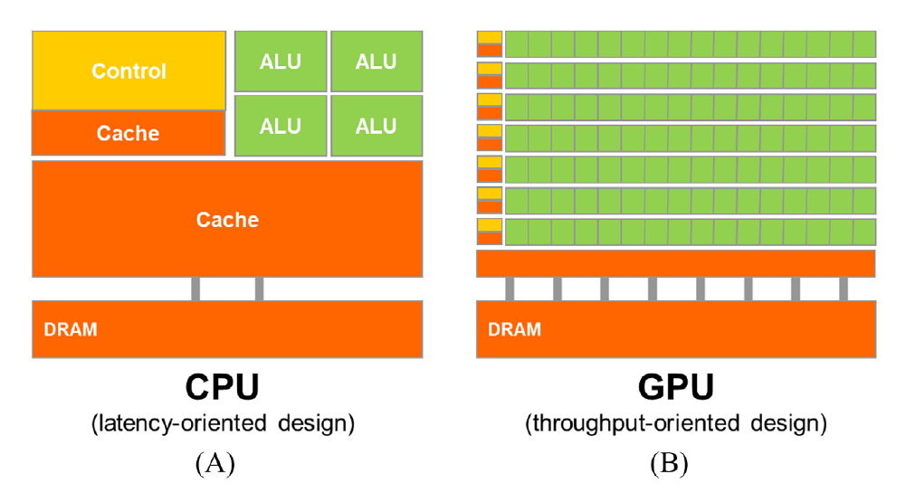
如图A所示，CPU的设计优化是为了顺序代码性能。算术单元和操作数传递逻辑的设计旨在最小化算术操作的有效延迟，代价是增加单位的芯片面积和功耗。大型的末级片上缓存被设计用来捕获经常访问的数据，并将一些长延迟的内存访问转换为短延迟的缓存访问。先进的分支预测逻辑和执行控制逻辑用于减轻条件分支指令的延迟。通过降低操作的延迟，CPU硬件减少了每个单独线程的执行延迟。然而，低延迟的算术单元、复杂的操作数传递逻辑、大缓存内存和控制逻辑消耗了本可以用于提供更多算术执行单元和内存访问通道的芯片面积和功耗。这种设计方法通常被称为面向延迟设计。
另一方面，GPU的设计哲学是由快速增长的视频游戏行业塑造的，该行业对在先进游戏的每个视频帧中执行大量浮点运算和内存访问施加了巨大的经济压力。这种需求激励GPU供应商寻找方法来最大化用于浮点计算和内存访问吞吐量的芯片面积和功耗预算。
在图形应用程序中执行大量浮点运算每秒的需求，例如视点变换和对象渲染的任务，是非常直观的。此外，每秒执行大量内存访问的需求同样重要，甚至可能更为重要。许多图形应用程序的速度受限于数据能够从内存系统传递到处理器以及反之的速率。GPU必须能够将极大量的数据移入和移出其DRAM（动态随机访问存储器）中的图形帧缓冲区，因为这种移动是使视频显示丰富而令玩家满意的原因。游戏应用程序通常接受的放松的内存模型（系统软件、应用程序和I/O设备对其内存访问方式的期望）也使GPU更容易支持在访问内存时的大规模并行性。
相比之下，通用处理器必须满足来自传统操作系统、应用程序和I/O设备的要求，这些要求对支持并行内存访问提出了更多挑战，因此增加内存访问吞吐量，通常称为内存带宽，变得更加困难。因此，图形芯片的内存带宽通常是同期可用CPU芯片的约10倍。
一个重要的观察是，在功耗和芯片面积方面，减少延迟比增加吞吐量昂贵得多。例如，可以通过将算术单元数量翻倍来使算术吞吐量翻倍，代价是将芯片面积和功耗翻倍。然而，将算术延迟减半可能需要将电流翻倍，代价是使用的芯片面积增加超过两倍，并将功耗增加四倍。因此，GPU中的主流解决方案是优化大量线程的执行吞吐量，而不是减少单个线程的延迟。这种设计方法通过允许流水线式内存通道和算术操作具有长延迟来节省芯片面积和功耗。内存访问硬件和算术单元的面积和功耗的降低允许GPU设计者在芯片上拥有更多这些组件，从而增加总执行吞吐量。图A的CPU设计中较少数量的较大算术单元和较少数量的内存通道，与图B中较多数量的较小算术单元和较多数量的内存通道之间的设计方法差异，直观地说明了这种差异。
1.2 通俗的解释¶
1.2.1 核心概念：什么是“延迟”与“吞吐”？¶
- 面向延迟设计（CPU 走的路）：
- 目标：让 单个任务 以最快的速度做完。
- 怎么做：不惜一切代价让“个人”变得极快、极聪明。配最顶级的跑鞋、专门的私人教练、高级规划路线。
- 代价：一个人身上的“装备”和“基建”太贵了，占用了大量的精力和空间，导致你没办法在工地上塞下太多这样的人。
- 面向吞吐设计（GPU 走的路）：
- 目标：在 同一时间内（比如一小时内）搬运最多的砖。
- 怎么做：我不追求某一个人跑得像闪电一样快，而是雇佣 成千上万个普通人，组成一条浩浩荡荡的流水线，大家一起挑担子往前走。
- 代价：每个人跑得其实不快（甚至有点慢、动作很简单），但胜在人多势众，整体运力极其恐怖。
1.2.2 “搬砖”的例子¶
假设现在有一堆砖要从 A 点搬到 B 点，任务量极大（就像深度学习或图形渲染中海量的浮点计算）。
1.2.2.1. 为什么 CPU 的“单兵极速”遇到了物理极限？¶
举一个例子：
- 普通人跑一趟要 15秒。
- 如果你想把效率提高一倍（让时间缩短到 7.5秒），你就得让这个人练成博尔特(都做不到)。但这在人类生理极限上极其困难；如果想要缩短到 3.75秒，甚至是不可能的任务。
- 在芯片设计里也是一样：想把单个任务的延迟（执行时间）缩短一半，芯片面积和功耗可能要翻好几倍甚至十几倍（因为要加上复杂的乱序执行逻辑、巨型缓存、精准的分支预测器等“超级跑鞋”）。这就是为什么 CPU 的单核性能越往后抠，每提升一点点都要付出极其昂贵的代价。
1.2.2.2. 为什么 GPU 的“人海战术”能轻松碾压？¶
CPU 觉得“把一个人培养成博尔特太难了”，而 GPU 的思路完全不同：
- 既然一个人跑 15 秒，那我雇 4 个人（甚至几万个人） 不就行了？
- 这几万个人不需要会什么高深的技术，他们只需要做最简单、机械的动作：拿起砖，按固定的路线往前走，放下。
- 哪怕每个人还是花 15 秒，但因为他们是 同时出发、源源不断 的（这就是多线程、流水线并行），一分钟内搬完的总砖数（吞吐量），会把那个累死累活的“博尔特”远远甩在身后。
1.2.2.3 总结：为什么会有巨大的性能差距？¶
“多核 CPU 和多线程 GPU 之间巨大的峰值性能差距”，本质上就是 “极少数精英（CPU）” 和 “百万大军（GPU）” 的路线选择：
- CPU（面向延迟）：追求“快”。把晶体管和功耗全砸在降低单线程的等待时间上，适合处理复杂的、逻辑分支多的、无法并行的事情（比如操作系统的日常调度）。
- GPU（面向吞吐）：追求“多”。把晶体管省下来，密密麻麻地塞满成千上万个简单的计算单元（就像修了十几条宽阔的高速公路让无数人一起跑），专门用来对付图形渲染、矩阵乘法、深度学习这种天生可以被拆成无数个小任务的“体力活”。
当时代进入深度学习和大数据时代，大家发现需要搬的“砖”呈指数级爆炸，这时候“人多力量大”的面向吞吐设计（GPU）就顺理成章地拿下了浮点性能竞赛的绝对统治地位。
1.2.3 不适合GPU的场景¶
从前面分析的“面向延迟（CPU）”与“面向吞吐（GPU）”的设计哲学差异出发，我们可以清晰地理解：并不是所有的计算任务都能、或者适合扔给 GPU。
如果把 GPU 比作“由成千上万个只会做简单重复劳动的工人组成的流水线车间”，那么有些工作天生就不适合在这个车间里完成。
以下是几类 最不适合、甚至无法在 GPU 上运行 的常见任务。
1.2.3.1 操作系统内核（OS Kernel）：为什么目前还没有直接跑在 GPU 上的操作系统？¶
现代操作系统的核心（如 Linux、Windows NT 内核的任务调度、中断处理、虚拟内存管理等）至今仍然牢牢运行在 CPU 上。将整个操作系统直接搬到 GPU 上运行是极其困难的，原因在于它们的“性格”完全冲撞：
-
极端复杂的控制流与“海量分支”（Branch Divergence）
- CPU 的优势：操作系统每时每刻都在做各种复杂的逻辑判断。比如：“如果用户点击了鼠标，就唤醒浏览器进程；否则如果硬盘满了，就弹出警告；否则如果网卡收到包，就触发中断……”。这些代码充满了大量的
if-else、switch-case和循环跳转。CPU 拥有强大的分支预测器和乱序执行能力，能高效处理这些不确定的逻辑。 - GPU 的痛点：GPU 的核心是“锁步执行”的（SIMT 架构，一组 32 个线程 Warp 必须执行相同的指令）。如果遇到复杂的
if-else，导致同一个 Warp 里的线程走入不同的分支（这叫 分支分化/Divergence），GPU 就不得不把不同的分支 串行化 执行——先让一部分人走左边（其他人干等着），再让另一部分人走右边。这会让 GPU 的吞吐优势荡然无存，效率变得极低。
- CPU 的优势：操作系统每时每刻都在做各种复杂的逻辑判断。比如：“如果用户点击了鼠标，就唤醒浏览器进程；否则如果硬盘满了，就弹出警告；否则如果网卡收到包，就触发中断……”。这些代码充满了大量的
-
极高的动态中断响应与低延迟要求
- 操作系统必须具备 毫秒甚至微秒级的中断响应能力（比如键盘输入、硬件报错、时钟滴答）。
- GPU 的设计哲学是 用长流水线来换取吞吐量，它内部的调度开销和任务排队天然带有一定的延迟，对突发的高优先级外部异步中断（Asynchronous Interrupts）响应非常迟钝。
没有人希望这个操作系统点了一下鼠标，需要5秒钟之后才有响应！
-
细粒度的资源争抢与同步
- 操作系统内核需要管理系统的全局状态（如进程控制块 PCB、全局页表等），不同进程、线程会频繁地对这些共享数据进行加锁、修改。
- GPU 拥有几十万个线程，如果它们同时去争抢、修改操作系统内核的全局数据结构，会引发灾难性的缓存一致性开销和死锁。
1.2.3.2. 强依赖单线程极致速度的串行计算（Amdahl 定律限制）¶
- 特点：有些算法或代码逻辑是 前后强依赖 的——必须算完第 1 步，才能算第 2 步，完全无法并行。
- 例子：某些复杂的加密解密链、特定递归算法、或者是单个复杂的模拟推导。
- 为什么不适合：如果交给 GPU，GPU 上成千上万个简单的计算核心因为拿不到后续数据，全都会闲置（Starvation），而单个核心的速度又远不如专为单线程优化过的 CPU 核心，导致效率极差。
1.2.3.3. 频繁的 I/O 交互与系统调用（I/O-Bound Workloads）¶
- 特点：任务的大部分时间不是在做数学计算，而是在 等待外部设备（如读取文件、网络 Socket 接收数据、数据库读写）。
- 例子：传统的 Web 服务器（处理 HTTP 请求、解析 JSON、查数据库）。
- 为什么不适合：GPU 的强项是内部极高的算术密度（Arithmetic Intensity）。如果把 Web 服务器放到 GPU 上，GPU 绝大部分时间都会在干瞪眼等待网卡或硬盘的数据，其海量的浮点计算单元完全没有用武之地，反而浪费了极高的硬件成本和功耗。
1.2.3.4. 动态内存分配与复杂的指针追踪（Pointer-Chasing）¶
- 特点：程序在运行过程中频繁地动态申请/释放内存（如
malloc/new），并且数据结构大量依赖链表、树（Tree）、图（Graph）这种靠指针到处跳转的数据结构。 - 例子：复杂的图论最短路径算法（在非矩阵形式下）、某些动态编译器的符号表解析。
- 为什么不适合：CPU 拥有庞大的多级缓存（L1/L2/L3 Cache）和复杂的预取机制，非常擅长应对这种无规律的内存随机访问。而 GPU 高度依赖 连续、规整的内存访问模式（Coalesced Memory Access），如果让几十万个线程同时在乱七八糟的链表和指针里到处跳，GPU 的内存带宽会直接被复杂的缓存未命中（Cache Miss）堵死。
1.2.3.5 总结¶
一句话概括：
- CPU 是交警总指挥和全能智囊：擅长处理 逻辑复杂、分支多、I/O频繁、需要极低单任务延迟 的事务（如操作系统内核、常规应用、业务逻辑）。
- GPU 是超级建筑队：擅长处理 规则、重复、数据量极大、可以被拆成成千上万个独立小任务 的体力活（如矩阵乘法、图形渲染、深度学习）。
这也是为什么现代计算机体系结构永远是 CPU + GPU 异构协同——CPU 负责运筹帷幄、处理复杂的操作系统与控制流，而把海量的计算重活交由 GPU 冲锋陷阵。
2. 现代GPU的架构¶
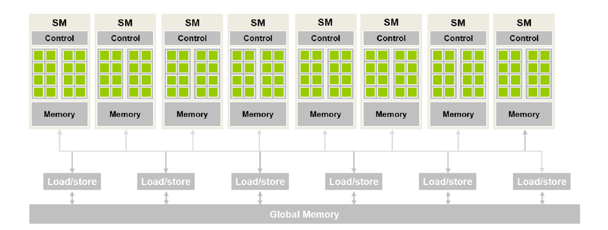
上图展示了一个典型的GPU的架构的示意图。它组织成一系列高度线程化的流多处理器（SM）。每个SM有多个处理单元，称为流处理器或CUDA核心（以下简称为核心），图中SM内显示的小块所示，它们共享控制逻辑和内存资源。例如，Ampere A100 GPU具有108个SM，每个SM有64个核心，整个GPU中总共有6912个核心。
SM还配备了不同的芯片上内存结构，统称为图中的“Memory”。这些芯片上的内存结构后面会详细介绍。GPU还配备了几十GB的芯片外设备内存，称为图中的“全局内存”。尽管较早的GPU使用图形双倍数据速率同步DRAM，但现在的GPU从NVIDIA的Pascal架构开始使用HBM（高带宽内存）或HBM2/HBM3/HBM3e，其中包括与GPU紧密集成在同一封装中的DRAM（动态随机存取存储器）模块。为简便起见，我们将在将所有这些类型的内存称为DRAM。
3. SRAM vs DRAM¶
在 GPU 架构中，SRAM（静态随机存取存储器）和 DRAM（动态随机存取存储器）共同构成了整个存储金字塔，但它们的物理角色截然不同：SRAM 负责“极致的速度”（片内缓存），而 DRAM 负责“海量的容量”（片外显存）。
我们可以从 物理结构、在 GPU 中的位置 以及 核心特性 三个维度来彻底理清它们的区别。
3.1. 物理结构与工作原理（为什么叫“静态”和“动态”）¶
它们最根本的区别在于 晶体管的微观电路设计：
3.1.1 🔬 SRAM（Static RAM，静态内存）¶
- 结构：通常由 6个晶体管（6T） 组成一个存储位（Bit）。
- 原理：它利用晶体管的双稳态锁存器（Latch）来存储状态（0 或 1）。只要通电，数据就会像被锁死一样牢牢保持住，不需要做任何额外操作。
- 特点：电路极其复杂，占用芯片面积巨大，但 速度快到没有朋友。
3.1.2 🔬 DRAM（Dynamic RAM，动态内存）¶
- 结构：仅由 1个晶体管 + 1个电容（1T1C） 组成一个存储位（Bit）。
- 原理：它把数据储存在电容的电荷里。由于电容天然存在微小的漏电，数据几毫秒就会漏光。因此，DRAM 必须在硬件层面上 每隔极短时间就“刷新（Refresh）”一次（重新给电容充电），这就是“动态”的由来。
- 特点：结构极度简单，集成度超高（可以在极小的芯片上塞进几百亿个电容），但电容充放电需要时间，速度远慢于 SRAM。
3.2. 在 GPU 架构中的具象位置¶
[ GPU 芯片内部 ]
├── SM (流多处理器)
│ └── Registers (寄存器) ─── [SRAM] (极快, 几百字节/线程)
│ └── L1 Cache / Shared Memory ── [SRAM] (十几KB~几百KB/SM)
├── L2 Cache (全局二级缓存) ────── [SRAM] (几十MB, 联通所有SM)
└── [ 芯片边界 (物理走线/中介层 Interposer) ]
└── Global Memory (全局显存) ── [DRAM] (GDDR6 或 HBM, 几GB~上百GB)
- SRAM 充当“前线突击队”：它们就是芯片内部的 寄存器（Registers）、L1 缓存、Shared Memory（共享内存）以及 L2 缓存。它们和计算核心（CUDA Core/Tensor Core）紧贴在一起，共享同一块硅片，没有任何漫长的走线延迟。
- DRAM 充当“后方大本营”：也就是我们常说的 全局显存（Global Memory）。无论是传统的 GDDR6 颗粒（通过主板走线连接），还是先进的 HBM3e（通过 3D 堆叠和中介层连接），它们在物理上都属于 片外（Off-chip）DRAM。数据要送到 SM 里计算，必须跨越芯片边界。
3.3. 核心参数对比表¶
| 特性 | SRAM (片内缓存/寄存器) | DRAM (片外显存/GDDR/HBM) |
|---|---|---|
| 基本存储单元 | 6 个晶体管 (6T) | 1 个晶体管 + 1 个电容 (1T1C) |
| 刷新需求 | 不需要刷新，通电即保持 | 必须每时每刻强制刷新充电 |
| 延迟 (Latency) | 极低 (约 1 ~ 几纳秒 ns) | 高 (约几百纳秒 ns) |
| 吞吐带宽 (Bandwidth) | 恐怖 (单片内部可达数十至上百 TB/s) | 高 (GDDR约几百GB/s，HBM约几TB/s) |
| 容量大小 | 极小 (通常几 MB 到几十 MB 见顶) | 极大 (十几 GB 到上百 GB 级别) |
| 生产成本 | 造价极其高昂，吃掉大量芯片面积 | 成本相对低廉，易于工业级大规模量产 |
| 功耗控制 | 运行功耗低，闲置功耗随面积增大 | 刷新操作会带来持续的固有功耗 |
3.4 💡 为什么 CUDA 程序员必须理解它们的区别？¶
大模型训练和推理中经常谈到的 “内存墙（Memory Wall）”，本质上就是 DRAM 拖了 SRAM 和计算核心的后腿。
- 当 GPU 执行矩阵乘法时，Tensor Core 以 SRAM 级别的速度疯狂吞噬数据。
- 如果数据没有提前从片外的 DRAM（显存） 搬运到片内的 SRAM（L1/Shared Memory），计算核心就会因为“断供”而陷入漫长的硬件等待（挂起休眠）。
- 优化的核心：CUDA 编程中诸如 合并访存（Coalesced Access）、算子融合（Kernel Fusion）、以及手动管理 Shared Memory，其根本目的只有五个字：少去读 DRAM。尽可能让数据在极快的 SRAM 内部被反复压榨和复用，从而彻底释放 GPU 的高频算力。
3.5 CPU里的SRAM和DRAM¶
在 CPU 架构中，SRAM 和 DRAM 的分工逻辑与 GPU 完全一致（依然是 SRAM 负责极致速度，DRAM 负责海量容量），但由于 CPU 的设计初衷是为了处理 复杂的串行逻辑和小规模数据，而不是像 GPU 那样搞大规模并发，因此它们在 CPU 内部的 具体物理位置和层级划分 有着极具 CPU 特色的结构。
我们可以沿着 CPU 的存储金字塔，由内向外来看看它们都在哪里：
3.5.1. CPU 内部的 SRAM：精密的缓存系统（Cache）¶
在 CPU 芯片内部，所有的高速缓存（Cache）无一例外全部由 SRAM 构成。现代 CPU 为了在“速度”和“容量”之间取得平衡，将 SRAM 划分为了三层级联架构：
[ CPU 物理芯片 (Die) ]
├── 核心 0 (Core 0)
│ ├── 寄存器 (Registers) ─── 离 ALU 最近的 SRAM (几个KB)
│ ├── L1 Cache (一级缓存) ── 核心独占的 SRAM (通常 32KB-94KB, 分为指令和数据)
│ └── L2 Cache (二级缓存) ── 核心独占/共享的 SRAM (通常几百KB-几MB)
├── 核心 1 (Core 1)
│ ├── ...
└── L3 Cache (三级缓存/LLC) ─── 所有核心共享的巨大 SRAM (十几MB-上百MB)
1. 📍 寄存器：由触发器硬编码，直接与计算单元“融为一体”¶
- 物理位置：寄存器是直接嵌套在 ALU（算术逻辑单元） 内部的。
- 特点：最快，容量最小，对程序可见的只有十几到几十个。
- 没有寻址开销：CPU 指令里会直接写明要操作哪个寄存器（例如 ADD RAX, RBX）。ALU 的控制逻辑通过硬连线（Hardwired），在电流通过的瞬间就能直接连通对应的寄存器端口。
- 多端口并发：寄存器通常拥有非常奢侈的多读多写端口（Multi-port），允许 ALU 在同一个时钟周期内，同时读取两个操作数并写入一个结果。
2. 📍 L1 Cache（一级缓存）¶
- 物理位置：死死贴在 CPU 核心的运算单元（ALU）旁边。
- 特点：速度快（延迟通常在 1 纳秒左右，约 4 个时钟周期），容量极小。它通常被一分为二：L1i（专门装指令）和 L1d（专门装数据），互不干扰。
3. 📍 L2 Cache（二级缓存）¶
- 物理位置：稍微外围一点，但在物理上依然属于该 CPU 核心的领地。
- 特点：比 L1 稍微慢一点，但容量大了一些，用来作为 L1 的后备弹药库。
4. 📍 L3 Cache（三级缓存，也叫 LLC - Last Level Cache）¶
- 物理位置：位于所有 CPU 核心的中央公摊区域。
- 特点：它是 CPU 芯片内部 面积最大、最显眼的一块 SRAM 阵列。所有的 CPU 核心都可以访问它，用来进行多核心之间的数据同步和共享。
3.5.2. CPU 外部的 DRAM：主内存（System RAM）¶
跨过 CPU 芯片的物理边界（通过内存控制器和主板布线），就到了物理 DRAM 的地盘。在 CPU 生态里，DRAM 的具象化形态就是我们插在主板上的 内存条(DDR4/DDR5)。
- 物理位置：通过主板上的内存插槽（DIMM），通过密密麻麻的硬件走线与 CPU 芯片相连。
- 特点：容量巨大（16GB、64GB 甚至服务器的几个TB），但因为跨越了物理芯片边界，数据过来要走很长的路，延迟相比片内 SRAM 呈断层式放大（通常需要几十到上百纳秒，相当于几百个时钟周期）。
3.6 CPU 与 GPU 在 SRAM/DRAM 布局上的核心差异¶
虽然两者的存储介质是一样的，但为了应对不同的任务，它们的侧重点完全不同：
| 维度 | CPU 的存储布局特点 | GPU 的存储布局特点 |
|---|---|---|
| SRAM (Cache) 的设计目标 | 降低延迟（Latency）。为了让单线程的串行代码运行得极快，CPU 的 SRAM 内部有极其复杂的预测和控制逻辑（如硬件预取、分支预测）。 | 提高吞吐（Throughput）。GPU 的 SRAM（如 Shared Memory）更像是一个由程序员显式控制的“寄存器堆”，用来临时存放成千上万个线程并发计算的中间矩阵。 |
| DRAM (内存/显存) 的差异 | 追求泛用性与大容量。采用 DDR5 架构，位宽一般只有 64-bit 到 128-bit（双通道），但可以轻松扩展到几百 GB 甚至 TB 级别，用来装操作系统和各种复杂的应用程序。 | 追求极致带宽（Bandwidth）。采用 HBM 或 GDDR6 架构，位宽高达 384-bit 甚至 4096-bit。容量虽然比 CPU 内存小，但搬运 AI 矩阵和像素数据的速度快几个数量级。 |
4. 块调度¶
4.1 基本概念¶
当调用内核时，CUDA运行时系统启动一个执行内核代码的线程网格。这些线程根据块逐块分配给SM。也就是说，同一块中的所有线程同时分配给同一个SM。下图说明了块分配给SM的过程。很可能同时将多个块分配给同一个SM。例如，在图中，每个SM分配了三个块。然而，块需要保留硬件资源进行执行，因此只能同时分配给给定SM的有限数量的块。关于可以同时分配给给定SM的块的数量的限制取决于多种因素，这些因素将在后面介绍。
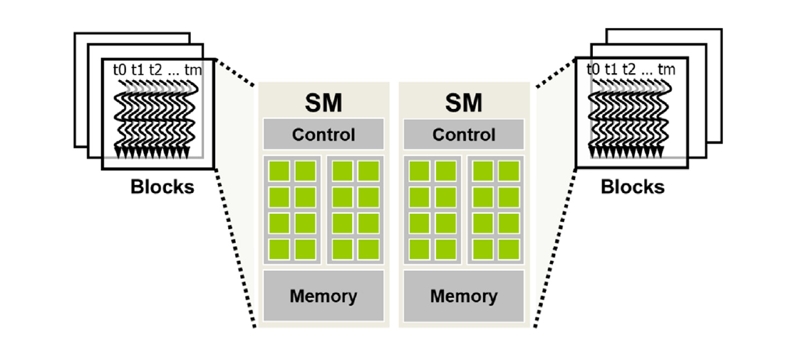
由于SM的数量有限以及每个SM可以同时分配的块的数量有限，CUDA设备中可以同时执行的块的总数也有限制。大多数网格包含的块数量远远超过这个数字。为确保执行所有块，运行时系统维护一个需要执行的块的列表，并在先前分配的块完成执行时将新块分配给SM。
线程按块逐块分配给SM的方式确保了同一块中的线程同时在同一个SM上调度。这一保证使得同一块中的线程能够以不同于不同块之间的线程的方式相互交互。其中包括栅栏同步，这还包括访问位于SM上的低延迟共享内存。
4.2 块调度详细解析¶
CUDA 的块调度是理解 GPU 执行模型的一个非常重要的知识点。它决定了线程块（Thread Block）如何分配到 SM（Streaming Multiprocessor，流式多处理器）上执行，也直接影响 GPU 的并行度、资源利用率以及 Kernel 的执行效率。
下面从硬件执行模型、块分配过程、资源限制、块调度机制以及对性能的影响几个方面展开介绍。
注意：有一些概念(比如Warp调度、快同步和共享内存等)是在后面详细介绍的，但是为了对比，这里也会提及。
4.2.1. CUDA 的三级执行结构¶
首先，需要明确 CUDA 的三级执行结构：
Grid（网格）
|
+-- Block 0
| |
| +-- Thread 0
| +-- Thread 1
| +-- Thread 2
| +-- ...
|
+-- Block 1
| |
| +-- Thread 0
| +-- Thread 1
| +-- ...
|
+-- Block 2
| |
| +-- Thread 0
| +-- Thread 1
| +-- ...
|
+-- ...
当调用 CUDA Kernel 时，例如：
dim3 block(256);
dim3 grid(1024);
my_kernel<<<grid, block>>>(...);
CUDA Runtime 会启动一个 Grid，其中包含 1024 个 Block，每个 Block 包含 256 个线程。
因此：
- Grid：整个 Kernel 的线程集合。
- Block：线程的逻辑组织单位，也是分配给 SM 的基本单位。
- Thread：实际执行 Kernel 代码的线程。
这里需要特别注意：
GPU 并不是直接将 Grid 中的所有线程分配给 SM，而是以 Block 为单位进行调度。
一个 Block 中的所有线程都会被分配到同一个 SM 上。
例如，一块具有 4 个 SM 的 GPU：
GPU
|
+----------+----------+----------+
| | | |
SM0 SM1 SM2 SM3
| | | |
Block 0 Block 1 Block 2 Block 3
Block 4 Block 5 Block 6 Block 7
Block 8 Block 9 Block 10 Block 11
假设每个 SM 可以同时容纳 3 个 Block，那么：
- SM0 可以同时驻留 Block 0、4、8。
- SM1 可以同时驻留 Block 1、5、9。
- SM2 可以同时驻留 Block 2、6、10。
- SM3 可以同时驻留 Block 3、7、11。
这里的关键概念是 Block Residency（线程块驻留）。
一个 Block 被分配到 SM 后，在执行结束之前，它会一直驻留在这个 SM 上，不会在执行过程中迁移到其他 SM。
4.2.2. 为什么一个 Block 必须在同一个 SM 上执行？¶
这是 CUDA 执行模型中非常重要的设计。
原因在于：同一个 Block 中的线程需要能够高效地共享资源和进行同步。
主要包括三个方面：
- 共享内存（Shared Memory）。
- 线程同步（Thread Synchronization）。
- Block 内部的资源共享。
4.2.2.1 共享内存¶
CUDA 提供了一种非常重要的片上存储资源：Shared Memory。
与 Global Memory 相比，Shared Memory 具有更低的访问延迟和更高的访问带宽。
例如：
__global__ void kernel(float* input, float* output)
{
__shared__ float shared_data[256];
int tid = threadIdx.x;
shared_data[tid] = input[tid];
__syncthreads();
output[tid] = shared_data[255 - tid];
}
这里所有线程共同访问：
__shared__ float shared_data[256];
这个数组并不是每个线程独立拥有一份，而是整个 Block 共享一份。
例如：
SM0
|
Shared Memory
|
shared_data[256]
|
+-------+-------+
| | |
Thread0 Thread1 Thread2 ...
由于同一个 Block 中的线程被分配到同一个 SM，因此它们可以访问该 SM 上的同一块 Shared Memory。
如果一个 Block 中的线程可以分散到不同 SM 上，那么就需要解决跨 SM 共享内存访问的问题，这会显著增加硬件设计的复杂度和访问开销。
因此，CUDA 采用了一个非常重要的约束：一个 Thread Block 中的所有线程必须驻留在同一个 SM 上。
4.2.2.2 线程同步¶
CUDA 提供了：
__syncthreads();
它是一个 Block 级别的同步屏障（Barrier）。
例如：
__global__ void kernel(float* input, float* output)
{
__shared__ float smem[256];
int tid = threadIdx.x;
smem[tid] = input[tid];
// 等待 Block 中的所有线程到达这里
__syncthreads();
output[tid] = smem[255 - tid];
}
执行过程：
- 每个线程将数据写入 Shared Memory。
- 部分线程可能先完成写入。
- 这些线程到达
__syncthreads()后等待。 - 直到整个 Block 的所有线程都到达同步点。
- 所有线程继续执行。
这里有一个重要区别：
__syncthreads() 只保证同一个 Block 内部的线程同步。
它不提供不同 Block 之间的同步。为什么？因为不同 Block 可能分配在不同 SM 上，而这些 SM 可以独立执行。
例如：
GPU
|
+------+------+
| |
SM0 SM1
| |
Block 0 Block 1
| |
Thread 0 Thread 0
Thread 1 Thread 1
| |
+-------------+
不支持普通
__syncthreads()
跨 Block 同步
这意味着 Block 之间没有普通 CUDA Kernel 内部的全局同步屏障。如果确实需要 Grid 级别的同步，可以考虑 Cooperative Groups 的 Grid Synchronization，但它有额外的启动和驻留条件。
4.2.3. 为什么一个 SM 可以同时执行多个 Block？¶
一个 SM 并不是只能执行一个 Block。事实上，现代 NVIDIA GPU 通常会让一个 SM 同时驻留多个 Block，以提高硬件资源利用率。
这里需要区分两个概念：
- Block：线程块，是软件层面的调度单位。
- Warp：线程束，是硬件实际调度和执行指令的基本单位。
例如：
my_kernel<<<1024, 256>>>();
每个 Block 有 256 个线程。NVIDIA GPU 通常采用 32 个线程组成一个 Warp。
因此：
一个 Block 包含 8 个 Warp。
假设一个 SM 同时驻留 3 个 Block：
SM0
|
+----------+----------+
| | |
Block 0 Block 1 Block 2
| | |
8 Warps 8 Warps 8 Warps
| | |
+----------+----------+
|
24 Warps
此时这个 SM 总共驻留：
这些 Warp 可以交替获得 SM 的执行资源。
例如：
时间轴：
Warp 0 ---- 执行指令 ----
Warp 1 ---- 执行指令 ----
Warp 2 ---- 执行指令 ----
Warp 3 ---- 执行指令 ----
...
当某个 Warp 因为 Global Memory 访问而等待时，Warp Scheduler 可以选择其他已经准备好的 Warp 执行指令。
这就是 GPU 隐藏内存访问延迟（Latency Hiding）的基本机制。
注意：多个 Block 驻留在同一个 SM 上，并不意味着它们的所有线程在物理上同时执行。它们的 Warp 是由 SM 中的 Warp Scheduler 调度执行的。
4.2.4. 为什么一个 SM 能够同时驻留的 Block 数量有限？¶
这是 Block Scheduling 最核心的部分之一。一个 SM 的硬件资源是有限的。每个 Block 在驻留到 SM 时，都需要占用一定的硬件资源。主要包括：
- Shared Memory。
- Registers。
- Warp Slots。
- Thread Slots。
- Block Slots。
这些资源共同决定了一个 SM 可以同时驻留多少个 Block。
4.2.4.1 Shared Memory 限制¶
假设某个 SM 有 100 KB 可供 Kernel 使用的 Shared Memory。
每个 Block 使用 20 KB：
__global__ void kernel()
{
__shared__ float smem[5120];
// ...
}
因为：
那么理论上：
也就是说，仅从 Shared Memory 角度考虑，一个 SM 最多可以同时驻留 5 个 Block。但这还不是最终结果，因为还有其他资源限制。
4.2.4.2 Register 限制¶
Registers 是 GPU 中非常重要的高速存储资源。每个线程都可能使用多个寄存器。
假设：
- 每个 SM 有 65536 个 32-bit Registers。
- 每个 Block 有 256 个线程。
- 每个线程使用 64 个 Registers。
那么每个 Block 需要：
因此，一个 SM 理论上最多可以驻留：
也就是说，Register 限制最多允许 4 个 Block。如果每个线程使用 128 个 Registers：
那么：
可以看到：
每个线程使用的寄存器越多，一个 SM 能够同时驻留的 Block 数量可能越少。
注意，实际寄存器分配还受到硬件分配粒度、编译器寄存器分配以及架构限制的影响，因此实际驻留数量可能低于简单计算结果。
举例说明一个Kernel代码里哪些变量可能放到寄存器里。
4.2.4.3 Thread 数量限制¶
每个 SM 可以同时驻留的线程总数也是有限的。
例如，假设：
- 每个 SM 最多支持 2048 个驻留线程。
- 每个 Block 有 256 个线程。
那么：
从线程数量来看，一个 SM 最多可以同时驻留 8 个 Block。
4.2.4.4 Warp 数量限制¶
由于一个 Warp 包含 32 个线程：
假设一个 SM 最多支持 64 个驻留 Warp。
每个 Block 有 256 个线程，也就是 8 个 Warp。
那么：
从 Warp 数量来看，最多可以驻留 8 个 Block。
4.2.4.5 Block 数量限制¶
即使 Shared Memory、Registers、Threads 等资源都足够，硬件仍然会限制一个 SM 能够同时驻留的 Block 数量。例如，某个架构最多允许一个 SM 同时驻留 16 个 Block。即使资源充足，也不可能超过这个限制。
4.2.4.6 最终 Block 驻留数量¶
综合上述限制：
这就是为什么一个 SM 可以同时驻留的 Block 数量是有限的。
4.2.5. GPU 如何调度大量 Block？¶
理解了 Block Residency，接下来就可以理解 GPU 如何执行一个非常大的 Grid。
假设：
- GPU 有 4 个 SM。
- 每个 SM 最多同时驻留 2 个 Block。
- Grid 一共有 16 个 Block。
那么整个 GPU 同一时刻最多可以驻留：
但是 Grid 有 16 个 Block。因此，不可能让所有 Block 同时驻留在 GPU 上。CUDA 采用的是一种分批调度机制。
4.2.5.1 第一批¶
首先，将 8 个 Block 分配给 4 个 SM：
GPU
|
+---------+---------+---------+
| | | |
SM0 SM1 SM2 SM3
| | | |
Block 0 Block 1 Block 2 Block 3
Block 4 Block 5 Block 6 Block 7
此时：
- SM0 驻留 Block 0、4。
- SM1 驻留 Block 1、5。
- SM2 驻留 Block 2、6。
- SM3 驻留 Block 3、7。
4.2.5.2 第二批¶
当某个 Block 执行结束并释放资源后，SM 就可以接收新的 Block。
例如，Block 0 执行结束：
SM0
|
+------+------+
| |
Block 0 Block 4
|
执行结束
|
释放资源
|
Block 8
|
新 Block
于是 Block 8 可以被分配到 SM0。其他 SM 也会在有资源可用时接收新的 Block。
4.2.5.3 第三批¶
随着执行不断推进：
第一批：
Block 0 ~ Block 7
第二批：
Block 8 ~ Block 15
最终所有 16 个 Block 都会得到执行。这里有一个重要概念：
Block 的分配是动态的，Block 不一定按照 Block ID 顺序分配给 SM。
例如，不能假设：
Block 0 一定分配给 SM0
Block 1 一定分配给 SM1
Block 2 一定分配给 SM2
CUDA 并不保证这种映射关系。实际分配方式由硬件调度机制决定。另外，Block 在执行期间不会从一个 SM 迁移到另一个 SM。
4.2.6. Block Scheduling 与 Warp Scheduling 的区别¶
这是初学 CUDA 时特别容易混淆的地方。实际上，CUDA 有两个不同层次的调度概念。
| 对比 | Block Scheduling | Warp Scheduling |
|---|---|---|
| 调度单位 | Block | Warp |
| 调度位置 | 将 Block 分配给 SM | SM 内部调度 Warp |
| 主要作用 | 决定 Block 在哪个 SM 上驻留 | 决定哪个 Warp 执行指令 |
| 生命周期 | Block 执行期间驻留在 SM | Warp 在 Block 生命周期内被调度 |
| 资源 | SM 级别资源 | SM 内的执行资源 |
可以用下面的结构理解：
GPU
|
Block Scheduler
|
+--------+--------+
| |
SM0 SM1
| |
Block 0 Block 1
Block 2 Block 3
| |
Warp Scheduler Warp Scheduler
| |
+---+---+ +---+---+
| | | |
Warp0 Warp1 Warp0 Warp1
Warp2 Warp3 Warp2 Warp3
这里可以把两个层次理解为：
- Block Scheduling：决定哪个 SM 获得哪些 Block。
- Warp Scheduling：决定 SM 中哪个 Warp 在当前周期执行指令。
这两种调度共同决定 GPU 的执行过程。
4.2.7. Block Scheduling 与 GPU Occupancy 的关系¶
接下来介绍一个非常重要的性能指标：Occupancy（占用率）。
Occupancy 描述的是：一个 SM 上实际驻留的 Warp 数量与该 SM 最大支持的驻留 Warp 数量之间的比例。
公式：
例如：
假设一个 SM 最多支持 64 个驻留 Warp。当前实际驻留了 32 个 Warp：
如果驻留了 48 个 Warp：
如果驻留了 64 个 Warp：
为什么 Occupancy 重要？
前面提到，GPU 使用 Warp Scheduling 隐藏内存访问延迟。例如：
float value = input[idx];
当一个 Warp 发起 Global Memory Load 后，数据可能需要经过较长时间才能返回。此时 Warp 可能处于等待状态。如果 SM 上有其他 Ready Warp，Warp Scheduler 就可以调度其他 Warp 执行。
Warp 0：Global Memory Load -> 等待数据
Warp 1：执行计算指令
Warp 2：执行计算指令
Warp 3：执行计算指令
Warp 4：Global Memory Load -> 等待数据
驻留的 Warp 越多，通常就越有机会找到可以执行的 Warp，从而隐藏内存访问延迟。但是需要注意：Occupancy 越高，并不意味着 Kernel 一定越快。
例如：一个 Kernel 使用较多寄存器，导致 Occupancy 降低，但这些寄存器可以减少数据的重复加载，也可能提高执行效率。
反过来，如果为了提高 Occupancy 而限制寄存器使用，可能导致 Register Spilling，使部分数据被放到 Local Memory 中，反而增加 Global Memory 访问。因此，Occupancy 是分析 GPU 性能的重要指标，但不是最终的性能目标。
4.2.8. 为什么不同 Block 之间不能直接使用 Shared Memory？¶
这个问题与 Block Scheduling 有直接关系。
假设：
__global__ void kernel(float* input, float* output)
{
__shared__ float smem[256];
int tid = threadIdx.x;
smem[tid] = input[tid];
__syncthreads();
output[tid] = smem[tid];
}
这里的 Shared Memory 是 Block 私有的。
假设有两个 Block：
GPU
|
+--------+--------+
| |
SM0 SM1
| |
Block 0 Block 1
| |
Shared Memory Shared Memory
| |
smem[256] smem[256]
虽然两个 Block 都声明了：
__shared__ float smem[256];
但它们实际上访问的是不同的 Shared Memory 区域。
因此：
Block 0 的 smem[0]
与：
Block 1 的 smem[0]
不是同一个存储位置。即使两个 Block 恰好驻留在同一个 SM 上，它们的 Shared Memory 也仍然是逻辑上相互隔离的。
这一点很重要：Shared Memory 是 SM 上的物理资源，但分配和访问范围是 Block 级别的。
为什么 这么设计呢？原因还是在于两个不同的 Block 不能保证 分配到同一个 SM 上，所以只能这么设计。
4.2.9. 一个实际例子：Block 大小如何影响调度？¶
考虑下面两个 Kernel：
// Kernel A
kernel<<<1024, 128>>>();
// Kernel B
kernel<<<512, 256>>>();
两个 Kernel 的总线程数量相同：
但它们的 Block 数量不同。
| 参数 | Kernel A | Kernel B |
|---|---|---|
| Block 数量 | 1024 | 512 |
| 每个 Block 线程数 | 128 | 256 |
| 每个 Block Warp 数 | 4 | 8 |
| 总线程数 | 131072 | 131072 |
假设一个 SM：
- 最多驻留 2048 个线程。
- 最多驻留 64 个 Warp。
- 最多驻留 16 个 Block。
暂时不考虑 Register 和 Shared Memory 限制。
对于 Kernel A：
因此最多驻留：
对于 Kernel B：
因此最多驻留：
可以看到：虽然两种 Kernel 的 Block 数量不同，但是在这个假设下，它们都可以达到 64 个驻留 Warp。这说明：Block 数量和 Warp 数量是两个不同的概念。不能仅仅通过 Block 数量判断 GPU 的并行度。
此外，较小的 Block 可能带来更灵活的资源分配，而较大的 Block 可能减少调度管理开销、改善某些计算模式下的效率。具体哪种更快，需要结合 Kernel 的资源使用情况进行测试。
4.2.10. 总结：需要建立的完整认知¶
最后，把整个 Block Scheduling 过程串联起来：
Kernel Launch
|
v
Grid
|
包含大量 Block
|
v
Block Scheduling
|
+----------+----------+
| | |
SM0 SM1 SM2
| | |
Block 0 Block 1 Block 2
Block 3 Block 4 Block 5
| | |
v v v
Warp Scheduler ...
| |
Warp 0 Warp 0
Warp 1 Warp 1
Warp 2 Warp 2
| |
v v
执行指令 执行指令
需要牢牢记住以下六点：
- Block 是分配给 SM 的基本单位。 同一个 Block 中的所有线程必须驻留在同一个 SM 上。
- 一个 SM 可以同时驻留多个 Block。 具体数量取决于 Shared Memory、Registers、Threads、Warps 和硬件 Block 数量限制。
- Block 在执行期间不会迁移到其他 SM。 执行完成后释放资源，其他尚未执行的 Block 才能获得驻留机会。
- Warp 才是硬件调度和执行指令的基本单位。 SM 内部通过 Warp Scheduler 在多个 Warp 之间切换。
- 不同 Block 之间不能使用普通的
__syncthreads()进行同步。 Shared Memory 也不能跨 Block 共享。 - Block Scheduling 直接影响 Occupancy。 合理设置 Block 大小、寄存器使用量和 Shared Memory 使用量，有助于提高 GPU 的资源利用率。
一个特别值得进一步理解的问题
CUDA 中有一个非常容易被忽略的事实：Block 是分配单位，但 Warp 是执行单位。 这意味着：
- GPU 不会把一个 Block 的一部分线程分配给 SM0，另一部分分配给 SM1。
- 但一个 SM 可以交替执行多个 Block 中的 Warp。
- 同一个 Block 中的不同 Warp 不一定在同一个时刻执行。
- 不同 Block 的 Warp 也可以交替执行，甚至在不同执行管线上并发执行。
5. 同步和透明可扩展性¶
5.1 屏障同步函数 __syncthreads()¶
CUDA 允许同一线程块中的线程使用屏障同步函数 __syncthreads() 协调它们的活动。请注意，这个函数的名字由两个“_”字符组成。当一个线程调用 __syncthreads() 时，它将在调用的程序位置停留，直到同一线程块中的 每个线程 都到达该位置。这确保了在任何线程继续到下一阶段之前，同一线程块中的所有线程都已完成了它们执行的阶段。
屏障同步是协调并行活动的一种简单而流行的方法。在现实生活中，我们经常使用屏障同步来协调多人的并行活动。例如，假设四个朋友一起去购物中心。他们可以分别去不同的商店购物。这是一种并行活动，比起他们一直作为一个团体依次访问所有感兴趣的商店要高效得多。然而，在离开购物中心之前，需要屏障同步。他们必须等到所有四个朋友都回到车上，然后才能离开。提前完成的人必须等待那些后完成的人。如果没有屏障同步，当车离开时，可能会有一个或多个人被留在购物中心，这可能会严重损害他们的友谊！
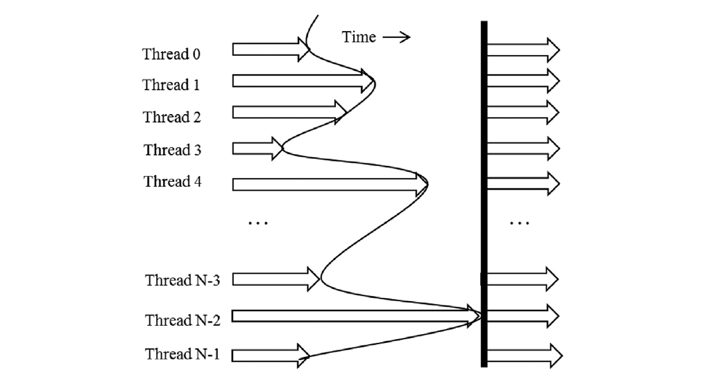
上图说明了屏障同步的执行过程。线程块中有 N 个线程。时间从左到右流逝。一些线程早早到达屏障同步语句，而一些则迟到得多。早到达屏障的线程将等待那些晚到的线程。当最后一个到达屏障时，所有线程都可以继续执行。有了屏障同步，“没有人会被落下”。
在CUDA中，如果存在__syncthreads()语句，则所有线程必须执行该语句。当将__syncthreads()语句放置在if语句中时，该块中的所有线程都要执行包含__syncthreads()的路径，或者一个也不执行。对于if-then-else语句，如果每个路径都有__syncthreads()语句，则该块中的所有线程都执行then-path或者所有线程都执行else-path。两个__syncthreads()是不同的屏障同步点。
5.2 一个有bug的例子¶
void incorrect_barrier_example(int n) {
...
if (threadIdx.x % 2 == 0) {
...
__syncthreads();
}
else {
...
__syncthreads();
}
}
这段代码展示了 CUDA 编程中一个非常经典且致命的错误：在条件分支（Divergent Branch）内部使用块级同步原语。
简单来说，这段代码会导致 GPU 陷入 死锁（Deadlock） 或引发 未定义行为（Undefined Behavior），导致程序直接卡死或计算结果彻底崩溃。
5.2.1 🛑 核心原因¶
CUDA 官方文档对 __syncthreads() 的行为有着极其严格的物理硬性规定：
同一个 Thread Block（线程块）中的所有线程，必须执行相同的
__syncthreads()语句。
如果这个栅栏（Barrier）原语被放在了条件分支语句（如 if-else）中，就必须保证该线程块内的 所有线程 计算出的条件结果完全一致（即要么全部走 if，要么全部走 else）。
但是：
if (threadIdx.x % 2 == 0)
这个条件导致同一个线程块里：
- 偶数号线程（0, 2, 4...）满足条件，进入了
if分支，卡在第 05 行的__syncthreads()，等待块内其他所有线程集合。 - 奇数号线程（1, 3, 5...）不满足条件，进入了
else分支，卡在第 09 行的__syncthreads()，等待块内其他所有线程集合。
5.2.2 🛠️ 正确的写法应该怎么改？¶
写 CUDA 算子时，必须把 __syncthreads() 提到 分支外面。如果分支内部有数据依赖，应该分阶段处理：
// 1. 各自在分支内部计算并写入 Shared Memory/寄存器
if (threadIdx.x % 2 == 0) {
... // 偶数线程的逻辑
}
else {
... // 奇数线程的逻辑
}
// 2. 彻底脱离 if-else 分支后，在全局公摊区域进行统一同步
__syncthreads();
// 3. 此时所有线程都已安全同步，可以放心读取上一步写好的数据
记住一个铁律：只要打算调用 __syncthreads()，就要确保整个 Thread Block 里的线程整整齐齐，一个都不能少，绝对不能把栅栏拆开放在 if 和 else 两个不同的阵营里。
5.3 异步块执行：CUDA 核心的可扩展设计权衡¶
这引出了CUDA屏障同步设计中的一个重要权衡。通过不允许不同块中的线程进行屏障同步，CUDA运行时系统可以以任意顺序相对于彼此执行块，因为它们中的任何一个都不需要等待其他块。这种灵活性使得可扩展的实现成为可能，如下图所示。图中的时间从上到下递进。在成本较低且只有少量执行资源的系统中，可以同时执行少量块，如图左侧所示。在具有更多执行资源的高端实现中，可以同时执行许多块，如图右侧所示。今天的高端GPU可以同时执行数百个块。
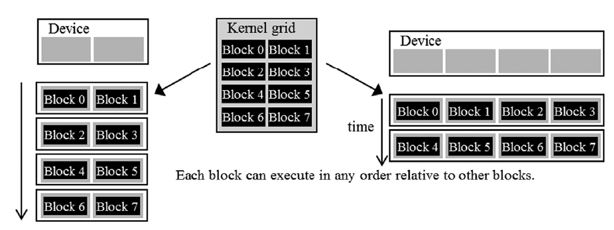
5.3.1. 为什么“老死不相往来”是种巨大的智慧？¶
传统的 CPU 编程（如 OpenMP、Pthreads）往往允许所有线程进行全局同步（Global Barrier）。然而在 GPU 拥有数万个并发线程的场景下，如果允许“块 A”去等待“块 B”，硬件就必须在底层维护一个全局的、跨所有 SM 的通信总线。
CUDA 采用了一种“断舍离”的权衡（Trade-off）：严格禁止块与块之间（Inter-Block）的直接屏障同步。
- 零耦合度：每一个线程块（Thread Block）都是一个完全自我孤立、自给自足的算力单元。块 0 不需要知道块 1 的存在，更不需要等待它。
- 硬件完全解放：这种无依赖性赋予了 GPU 硬件调度器（GigaThread Engine）绝对的自由度。它可以根据当前 SM 的空闲情况，像玩俄罗斯方块一样，任意安排块的执行顺序（无论正序、倒序还是乱序）。
5.3.2. 硬件弹性可扩展性¶
“低端系统执行少，高端系统执行多”，在实际硬件产品线例子：
- 一份代码，到处运行（Forward Compatibility）：当你写好了一个 CUDA 算子（如自定义的 Attention 算子），你把它放在只有 24 个 SM 的千元级显卡（如消费级便携设备）上，它能正确运行（每次并发跑 24 个块，分多轮跑完）；你把它原封不动拿到拥有上百个 SM 的企业级 NVIDIA H100 甚至最新的 Blackwell B200 芯片上，它不需要重新编译，会自动吃满硬件资源，并行度瞬间拉满。
- 算力平滑升级：这种设计使得 NVIDIA 可以通过简单地“堆叠 SM 核心数量”来推出新一代显卡，而软件生态不需要发生任何底层重构。
5.3.3. 补充：打破僵局的现代突破——协同组（Cooperative Groups）¶
虽然“块间无法同步”带来了无与伦比的可扩展性，但在某些复杂的现代 AI 算子（如全局减参 Reductions、或者是流水线并行的 FlashAttention-3）中，工程师 确实需要 跨块通信。为了打破这一限制，同时不破坏原有的硬件扩展契约，NVIDIA 在较新的 CUDA 版本中引入了 协同组（Cooperative Groups） 技术：
- 网格级同步（Grid Synchronization）：它允许程序员在代码中发起
this_grid().sync()，实现整个 Grid（所有块）的同步。 - 代价与硬性条件：为了防止死锁，这种同步要求 所有的块必须同时驻留在 SM 中（Resident Blocks）。如果 GPU 判定当前硬件资源装不下你申请的所有块，程序在启动时就会直接报错（Launch Failure）。这从反面再次证明了：没有物理资源的并发，就绝对无法承受屏障同步的代价。
6. SM 内的 Warp 调度¶
6.1 Warp调度和SIMT¶
我们已经了解到，块可以相对于彼此以任何顺序执行，这使得跨不同设备实现的透明可扩展性成为可能。然而，我们对每个块内部的线程执行时间并没有多少详细说明。在概念上，应该假设块中的线程可以以任何顺序相对于彼此执行。在具有阶段的算法中，应在我们希望确保所有线程在开始下一个阶段之前完成了前一个阶段的执行时使用屏障同步。执行内核的正确性不应取决于任何假设，即某些线程将在不使用屏障同步的情况下同步执行。
CUDA GPU中的线程调度是硬件实现的概念，因此必须在具体硬件实现的背景下讨论。到目前为止，大多数实现中，一旦一个块被分配到一个SM，它会进一步划分为32个线程单元，称为warp。warp的大小是实现特定的，不过在Nvidia的GPU到目前都是固定的32，而AMD的显卡warp的大小是64。了解warp可以帮助理解和优化特定CUDA设备上CUDA应用程序的性能。
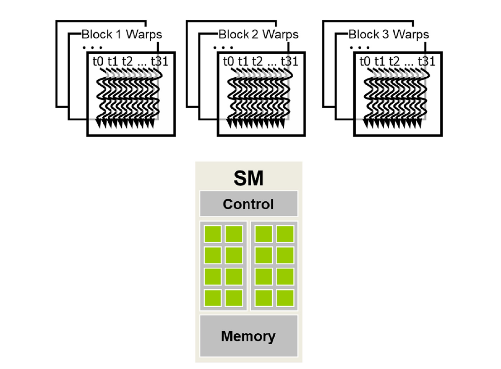
warp是SM中线程调度的单元。上图显示了在一种实现中将块划分为warp的情况。在这个例子中，有三个块—块1、块2和块3—都分配给一个SM。每个块都被进一步划分为warp以进行调度。每个warp由32个连续的threadIdx值组成：线程0到31组成第一个warp，线程32到63组成第二个warp，依此类推。我们可以计算出在给定的块大小和每个SM分配的块数的情况下，驻留在SM中的warp的数量。在这个例子中，如果每个块有256个线程，我们可以确定每个块有256/32或8个warp。在SM中有3个块，我们有8 * 3 = 24个warp。
块根据线程索引划分为warp。如果一个块被组织成一维数组，即只使用threadIdx.x，划分是直接的。warp中的threadIdx.x值是连续递增的。对于warp大小为32，warp 0以线程0开始，以线程31结束，warp 1以线程32开始，以线程63结束，依此类推。通常，warp n以线程32 * n开始，以线程32 * (n+1) - 1结束。对于大小不是32的倍数的块，最后一个warp将填充为非活动线程，以填满32个线程位置。例如，如果一个块有48个线程，它将被分成两个warp，第二个warp将填充16个非活动线程。
非活动线程会浪费资源，所以我们通常期望块的大小是32的倍数。这也是为什么很多大模型的参数(尤其是最后一个维度)通常是32的倍数的原因。
对于由多个线程维度组成的块，维度将在划分为warp之前被投影为线性化的行主布局。线性布局由将y和z坐标较大的行放在y和z坐标较低的行之后来确定。也就是说，如果一个块由两个维的线程组成，其中一个将通过将所有threadIdx.y为1的线程放在threadIdx.y为0的线程之后来形成线性布局。threadIdx.y为2的线程将在threadIdx.y为1的线程之后放置，依此类推。threadIdx.y值相同的线程按照递增的threadIdx.x顺序连续放置。
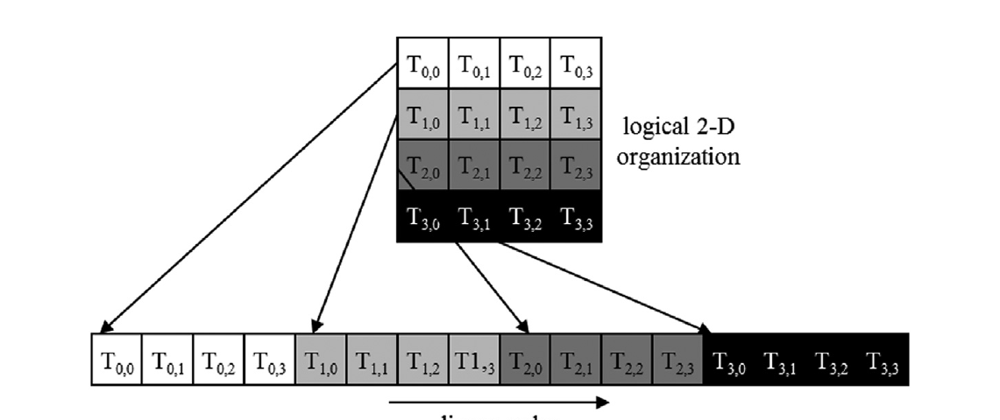
上图显示了将二维块的线程放入线性布局的示例。上部显示了块的二维视图。每个线程都显示为T_{y,x}，其中x为threadIdx.x，y为threadIdx.y。图的下半部分显示了块的线性化视图。前四个线程是threadIdx.y值为0的线程；它们按照递增的threadIdx.x值排序。接下来的四个线程是threadIdx.y值为1的线程。它们也按照递增的threadIdx.x值放置。在这个例子中，所有16个线程形成半个warp。warp将填充另外16个线程，以完成32个线程的warp。想象一下一个具有8 * 8线程的二维块。这64个线程将形成两个warp。第一个warp从T_{0,0}开始，以T_{3,7}结束。第二个warp从T_{4,0}开始，以T_{7,7}结束。
对于三维块，我们首先将所有threadIdx.z值为0的线程放入线性顺序中。这些线程被视为一个二维块，然后将所有threadIdx.z值为1的线程放入线性顺序中，依此类推。例如，对于一个三维块（x维度中有四个，y维度中有八个，z维度中有两个），这64个线程将被划分为两个warp，第一个warp包含T_{0,0,0}到T_{0,7,3}，第二个warp包含T_{1,0,0}到T_{1,7,3}。
SM的设计是为了按照单指令多数据（SIMD）模型执行warp中的所有线程。也就是说，在任何时刻，为warp中的所有线程提取和执行一条指令。下图显示了SM中的核心如何分组成处理块，其中每8个核心形成一个处理块，并共享一台指令提取/调度单元。例如，Ampere A100 SM有64个核心，组织成四个每个16个核心的处理块。同一warp中的线程被分配到相同的处理块，该块为warp提取指令，并同时为warp中的所有线程执行它。这些线程将相同的指令应用于数据的不同部分。由于SIMD硬件有效地限制了warp中的所有线程在任何时间点执行相同的指令，warp的执行行为通常被称为单指令，多线程(SIMT)。
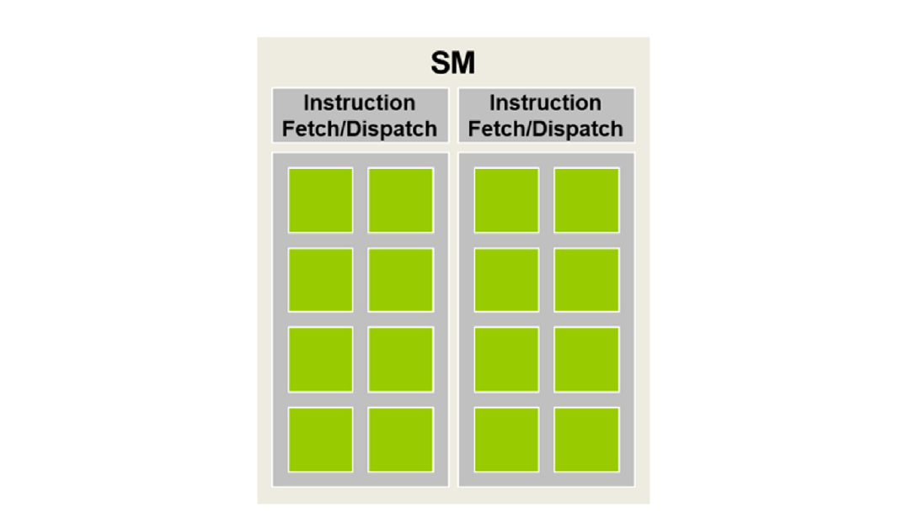
6.2 SM的一个处理块¶
好奇的同学可能会问：你之前说一个warp是32个线程，这里提到A100的16个核心共享一个指令提取/调度单元，这好像有些不匹配？
这两个事实并不矛盾。要理解为什么会有“16个核心的处理块”去执行“32个线程的 Warp”，我们需要把 软件抽象 与 硬件实现 结合起来看。
在 NVIDIA Ampere A100 架构中：
- 一个 SM（流多处理器）内部总共包含 64 个 FP32（单精度浮点）CUDA 核心。
- 每一个处理块（Sub-block）内部有 16 个 FP32 核心，它们共同作为物理执行单元。
6.2.1 物理结构：4 个处理块与 16 核心分发¶
每个 A100 SM 内部被精准地划分为 4 个处理块（Processing Blocks）。 如果把单个处理块的硬件算力资源拆开来看，它包含：
- 1 个 独立的指令调度器（Warp Scheduler）与分发单元
- 16 个 FP32 CUDA 核心
- 16 个 INT32 核心
- 8 个 FP64（双精度）核心
- 1 个 第三代 Tensor Core（负责矩阵乘法加速）
6.2.2 它是如何把 16 个核心作为执行单元跑 32 线程的？¶
CUDA 逻辑层发射的基本单元 Warp（线程束）雷打不动永远是 32 个线程。那么这 4 个处理块中的某一个，在执行一个 32 线程的 Warp 时，底层的运转逻辑是这样的：
- 第 1 个时钟周期：指令调度单元发出一条
ADD指令。处理块内的 16 个 FP32 核心 同时轰鸣，一口气把这个 Warp 内部的 前 16 个线程（线程 0 \sim 15）的计算处理掉。 - 第 2 个时钟周期：指令调度单元不需要重复发射新指令，硬件流水线自动推进。这 16 个核心 继续发力，把该 Warp 内部 后 16 个线程（线程 16 \sim 31）的计算处理掉。
6.2.3 为什么叫 SIMT（单指令多线程）？¶
通过上面的物理过程，你就能完美区分这几个概念在 A100 上的交织：
- SIMD 层面（硬件执行）：在单处理器块内部，它是 16路并行的 SIMD 架构（16 个核心在 1 个周期里用相同的指令洗礼 16 个不同的数据通道）。
- SIMT 层面（逻辑与硬件抽象）：对程序员而言，你只管把 32 个线程打包成一个 Warp 扔进去。硬件调度器在 连续的 2 个时钟周期内 帮你完成了全员 32 线程的发射。这种利用“16 宽度的硬件实体”在“2 周期的时间轴”上拼凑出“32 宽度逻辑整体”的做法，就是现代 GPU 掩盖延迟、节省控制资源最核心的微架构智慧。
6.3 Warp和处理块的解耦¶
当一个处理块的指令调度单元提取了一条指令（例如 ADD），并准备发射给一个包含 32 个线程的 Warp 时，硬件会启动 流水线多周期发射机制：
6.3.1 🕒 场景 A：8 个物理核心的处理块（执行一个 32 线程的 Warp）¶
物理核心只有 8 个，要执行完 32 个线程的任务，调度单元会把这个 Warp 切成 4 批（每批 8 个线程），连续发射 4 次：
- 第 1 个时钟周期：核心执行线程 0 \sim 7 的
ADD计算。 - 第 2 个时钟周期：核心执行线程 8 \sim 15 的
ADD计算。 - 第 3 个时钟周期：核心执行线程 16 \sim 23 的
ADD计算。 - 第 4 个时钟周期：核心执行线程 24 \sim 31 的
ADD计算。
对程序员的视角（逻辑层）：所有的 32 个线程执行了同一条
ADD指令，这叫 SIMT。 对硬件的底层（物理层）：这条指令在流水线里跑了 4 个时钟周期 才彻底吞吐完毕。
6.3.2 🕒 场景 B：Ampere A100 的 16 个物理核心处理块¶
在 A100 中，硬件得到了升级，每个处理块拥有 16 个 FP32 核心。
- 此时，调度单元只需要连续花费 2 个时钟周期（第 1 周期跑前 16 个线程，第 2 周期跑后 16 个线程），就能完美把一个 32 线程的 Warp 全部发射并执行完毕。
6.3.3. 为什么不把 Warp 设为 8 或 16 ？¶
既然物理核心是 8 或 16，为什么不直接把 Warp 的大小也改成 8 或 16 呢？为什么从 2006 年第一代 CUDA 到今天最新的 Blackwell 架构，32 一直是不可动摇的铁律？
1. 完美的“延迟掩盖（Latency Hiding）”¶
从显存（DRAM）或者高层缓存里拿数据是非常慢的，可能需要几十甚至上百个周期。 如果 Warp 只有 8 个线程，那它只需要 1 个周期就执行完了，接下来计算单元就会陷入漫长的发呆等待（挂起）。 而 Warp = 32 强制一条指令在硬件流水线里持续滚动 2~4 个周期。这延长了单个指令的物理生命周期，配合多 Warp 轮询技术，能够 极高效率地让算术流水线保持全满载状态，用低成本的硬件掩盖了高昂的访存延迟。
❌ 当 Warp = 8 时：
每个 Warp 只需要 1 个周期就执行完了。然后它因为等待数据被挂起。这意味着：
- 第 1 周期：核心执行 Warp 0。在这同一个周期内，调度器必须使出浑身解数，在几百个备选 Warp 中找出谁是清醒的，并做好发射 Warp 1 的准备。
- 第 2 周期：核心执行 Warp 1。调度器必须在短短 1 周期内，再次找出 Warp 2。
- 物理瓶颈：调度器的查找和分发速度，跟核心的消耗速度 刚好是 1:1 撞车。硬件电路一旦稍微有一点点延迟（比如做分支预测或标签比对），核心就会因为“调度器还没决定好下一个切给谁”而被迫停工发呆。
当 Warp = 32 时（使用 8 核心）：
一个 Warp 扔进去，物理核心要哼哧哼哧吃 4 个周期。
- 在这 4 个周期里，核心一直在忙着算 Warp 0。
- 调度器直接放假了 3 个周期！ 它有极其充裕的时间（整整 4 个周期），慢条斯理地在全场筛选出下一个最适合上场的 Warp 1。
- 结果：NVIDIA 可以使用 非常廉价、非常省晶体管、逻辑极简单的调度器，就能稳稳地喂饱核心，把省下来的巨大芯片面积全部拿去堆计算核心。
2. 极致的控制逻辑性价比¶
32 位（4 字节）是现代计算机硬件最天然的总线对齐宽度。用 1 个 32 位的寄存器（Active Mask）刚好可以用 1 个 Bit 完美控制一个 Warp 内部 32 个线程的死活（激活或休眠）。控制器的成本被压到了极低。
7. 分支分歧¶
7.1 基本原理¶
当warp中的所有线程在处理数据时都遵循相同的执行路径（更正式地称为控制流）时，SIMD执行效果很好。例如，对于if-else结构，当warp中的所有线程执行if-path或全部执行else-path时，执行效果很好。然而，当warp中的线程采用不同的控制流路径时，SIMD硬件将对这些路径进行多次遍历，每个路径一次。例如，对于if-else结构，如果warp中的一些线程遵循if-path而另一些线程遵循else-path，硬件将执行两次。一次执行遵循if-path的线程，另一次执行遵循else-path的线程。在每次遍历期间，遵循另一路径的线程将不被允许产生效果。
当同一warp中的线程遵循不同的执行路径时，我们说这些线程表现出控制分支，即它们在执行中分岔。分支warp执行的多通道方法扩展了SIMD硬件实现CUDA线程的完整语义的能力。虽然硬件对warp中的所有线程执行相同的指令，但它有选择地只让这些线程在对应于它们所采取的路径的通道中产生效果，从而使每个线程都可以似乎采取自己的控制流路径。这保留了线程的独立性，同时利用了SIMD硬件的降低成本。然而，分支的代价是硬件需要执行额外的通道，以允许warp中的不同线程做出自己的决策，以及每个通道中由非活动线程消耗的执行资源。
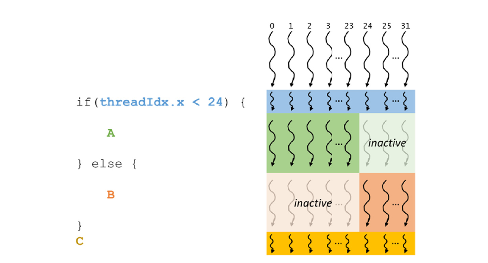
上图显示了warp如何执行分支的if-else语句的示例。在这个例子中，当由线程0到31组成的warp到达if-else语句时，线程0到23走then-path，而线程24到31走else-path。在这种情况下，warp将通过代码执行一次，其中线程0到23执行A，而线程24到31处于非活动状态。warp还将通过代码执行另一次，其中线程24到31执行B，而线程0到23处于非活动状态。然后，warp中的线程重新汇聚并执行C。在Pascal架构和之前的架构中，这些通道是按顺序执行的，意味着一次通道执行完毕后另一次通道执行。从Volta架构开始，这些通道可以并发执行，意味着一次通道的执行可能与另一次通道的执行交错进行。这个特性被称为独立线程调度。
7.2 独立线程调度¶
7.2.1. Pascal 及更早架构：死板的“SIMT 锁”（锁同步控制流）¶
在早期 GPU 中，一个 Warp 内部的 32 个线程 共享一个唯一的程序计数器（PC, Program Counter）和调用栈。 这意味着，只要发生了分支分歧，硬件的处理方式非常粗暴：
- 必须等 A 阵营把 A 分支的代码 彻底跑完、全部出栈 之后，PC 指针才能跳转到 B 分支，让 B 阵营进去跑。
- 物理痛点：由于它们死死共用一个 PC，A 和 B 绝对是 前后串行、老死不相往来 的。如果 A 分支里写了一个死循环或者在等某个锁，B 分支甚至连“看一眼外面世界”的机会都没有，全场直接死锁。
7.2.2. Volta 及后续现代架构：“独立线程调度（Independent Thread Scheduling）”¶
从 Volta 架构开始，NVIDIA 做出了硬件重构：为 Warp 内部的每一个线程，都配备了独立的程序计数器（PC）和执行栈！
虽然这 32 个线程在物理发射时依然要遵循 SIMT 模型的物理对齐，但在 逻辑调度 上，它们彻底自由了：
- 交错并发（Interleaved Execution）：A 阵营和 B 阵营不需要排队死等了。硬件调度器可以跑两步 A 分支的指令，突然觉得 B 分支的访存数据到了，立刻无缝 交错切换 去跑两步 B 分支的指令。
- 打破死锁：因为每个线程都有自己的 PC 指针，即使 A 分支在等 B 分支释放某段共享内存锁（这在以前是必死锁的乌龙代码），Volta 也能机智地先切到 B 分支把锁解开，再切回 A 分支继续跑。
7.2.3 独立线程调度¶
那么我们可能有一个问题，Volta 架构开始的独立线程调度和之前的绝对同步方式有什么区别呢？
7.2.3.1 分支分化的“性能惩罚”依然存在¶
“如果发生 if-else 分支分化，硬件是不是依然要分两次（或多次）执行，未走该分支的线程是不是依然会被屏蔽？”
- 答案是：是的。
物理现实是，一个 Warp 共享同一个指令获取与调度单元。如果一部分线程走 if，另一部分走 else，GPU 的硬件铝线和算术单元（ALU）无法在同一瞬间对同一组核心输入两套完全不同的指令。
- 因此，硬件依然会通过掩码（Predication / Masking）先执行
if路径（关闭走else的线程），再执行else路径（关闭走if的线程）。 - 这意味着：分支分化带来的性能损耗（序列化执行、吞吐量下降）在现代 GPU 上依然存在。 编写代码时尽量避免 Warp 内部发生剧烈的数据相关分支，依然是核心的优化准则。
7.2.3.2 从“绝对同步（Lockstep）”到“独立线程调度（ITS）”¶
1. 消除“刚性重聚（Rigid Reconvergence）”限制¶
- 旧架构（Volta之前）：warp 内部的线程必须严格遵循“锁步（Lockstep）”执行模式，且编译器和硬件会强制规定必须在
if-else的“立即后支配点（Immediate Post-Dominator, IPDom）”无条件强制重聚。 - 现代 GPU（Volta 之后）：引入了独立线程调度。每个线程都有自己独立的程序计数器（PC）和调用栈状态。虽然它们在物理上仍然受限于同一硬件单元的调度，但它们在控制流的灵活性上大大增加，不再被死板的栈规则完全锁死。
2. 允许 Warp 内的独立同步与锁机制（避免死锁）¶
- 在旧架构中，如果同一个 Warp 的线程在分化后尝试使用互斥锁、自旋锁（Spinlock）或者复杂的协作逻辑，极易导致死锁（因为部分线程被强制挂起等待，而其他线程无法推进）。
- 现代 GPU 由于支持独立线程调度，允许线程在 Warp 内部进行更灵活的同步和状态转换。例如，复杂的无锁数据结构、线程间通信或细粒度锁在现代 GPU 上变得可行，而不会像以前那样直接导致程序挂起。
3. 编程语法的重大变化（必须显式使用同步原语）¶
正因为现代 GPU 不再保证隐式的、绝对的按步就班，如果在代码中依赖“同一个 Warp 内的线程默认就是同步的”（即所谓的 Warp-synchronous 编程），在现代 GPU 上会引发数据竞争或未定义行为。
- 因此，CUDA 9 及以后版本强制引入了
__syncwarp()等显式同步指令，以及带有掩码的新一代 Warp 内部函数（如__shfl_sync）。
4. 一个__syncwarp()的例子¶
一个最经典且直观需要使用 __syncwarp() 的场景，是 同一个 Warp 内部通过共享内存（Shared Memory）进行生产者-消费者通信。
在现代 GPU（Volta 及更新架构）的独立线程调度（ITS）机制下，同一个 Warp 内的线程不再强制按绝对锁步（Lockstep）执行。如果一个线程写入数据，其他线程立刻去读取，就必须显式同步，否则会发生严重的未定义行为（Race Condition）。
假设我们要实现一个简单的逻辑：让 Warp 内的第 0 号线程生产一个数据，写入共享内存，然后 Warp 内的所有其他线程从共享内存中读取这个数据。
__global__ void warp_broadcast_example(float *out) {
__shared__ float s_data[1];
int lane_id = threadIdx.x % 32; // 当前线程在 Warp 内的编号 (0 ~ 31)
// 1. 生产者：仅由 lane 0 写入数据
if (lane_id == 0) {
s_data[0] = blockIdx.x;
}
// ----------------------------------------------------
// 为什么要加 __syncwarp()？
// ----------------------------------------------------
// 因为独立线程调度（ITS），lane 0 可能执行得慢，或者其他 lane 跑得快。
// 如果不加同步，lane 1 ~ 31 可能会在 lane 0 还没完成写入时就去读取 s_data[0]，
// 从而读到旧的或垃圾数据（读写冲突）。
//
// 加上 __syncwarp() 后，它会强行在这里设置一个 Warp 内的屏障：
// 必须等到 Warp 内所有线程都执行到这一行，且确保 lane 0 的写入对其他人可见，才能继续。
__syncwarp(0xFFFFFFFF);
// ----------------------------------------------------
// 2. 消费者：所有线程从共享内存中读取数据
float val = s_data[0];
out[threadIdx.x] = val + threadIdx.x;
}
为什么在老架构上不会出事，但在现代 GPU 上必须加？
-
在旧架构（Pascal 及以前）上：
- 硬件是绝对锁步的，Warp 内所有线程在物理上是“齐头并进”的。
- 当代码执行到
if (lane_id == 0)时，走else的线程虽然被掩码屏蔽了，但它们在硬件电路上依然在空转等待。因此，当执行流走到下一步时，硬件上默认所有线程都已经完成了上一步。程序员经常会偷懒不写同步指令。
-
在现代 GPU（Volta / Ampere / Hopper / Blackwell）上：
- 引入了 独立线程调度 后，由于控制流分化或硬件调度差异，线程的实际执行进度可能出现前后错位。
- 如果不写
__syncwarp()，编译器和硬件无法保证前一步的内存写入（Store）已经对后续的读取（Load）可见。这会导致极难排查的随机结果错误。因此，现代 CUDA 编程规范 强制要求：任何跨线程的 Warp 内共享内存通信，都必须使用带有掩码的__syncwarp()进行屏障同步。
7.3 循环¶
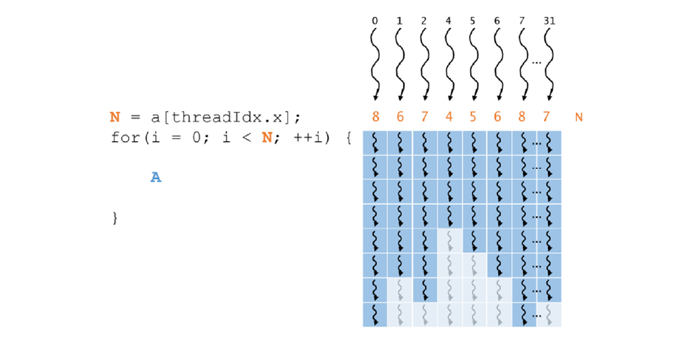
分支也可能在其他控制流结构中出现。上图展示了warp如何执行分支的for循环的示例。在这个例子中，每个线程执行不同数量的循环迭代，循环迭代的数量在四和八之间变化。在前四次迭代中，所有线程都是活动的并执行A。在剩余的迭代中，一些线程执行A，而其他线程因为已经完成它们的迭代而不活动。
可以通过检查控制结构的决策条件来确定控制结构是否会导致线程分支。如果决策条件基于threadIdx的值，控制语句可能会导致线程分支。例如，语句if(threadIdx.x > 2) {. . .}会导致块的第一个warp中的线程遵循两条分支的控制流路径。线程0、1和2会遵循不同于线程3、4、5等的路径。同样，如果循环的循环条件基于线程索引值，循环也可能导致线程分支。
一个小问题：如果if语句的判断条件只依赖blockIdx.x，会发生分歧吗？
7.4 分歧对性能的影响¶
在处理线程映射到数据时，使用具有线程控制分支的控制结构的一个普遍原因是处理边界条件。这通常是因为线程的总数需要是线程块大小的倍数，而数据的大小可以是任意的数字。例如，在向量加法中，我们有一个if(i < n)语句。这是因为不是所有的矢量长度都可以表示为块大小的倍数。例如，假设矢量长度为1003，我们选择64作为块大小。需要启动16个线程块来处理所有1003个矢量元素。然而，这16个线程块将有1024个线程。我们需要禁用线程块15中的最后21个线程，以防止它们执行原始程序不期望或不允许的工作。请记住，这16个块被分成32个warps。只有最后一个warp（即最后一个块中的第二个warp）会有分歧。
请注意，控制分支的性能影响会随着正在处理的矢量大小的增加而减小。对于矢量长度为100的情况，四个warp中的一个会有控制分支，这可能对性能产生重大影响。对于矢量大小为1000的情况，32个warp中只有一个会有控制分支。也就是说，控制分支只会影响约3%的执行时间。即使它将warp的执行时间加倍，对总执行时间的净影响也将约为3%。显然，如果矢量长度为10,000或更大，313个warp中只有一个会有控制分支。控制分支的影响将远小于1%！
对于二维数据，例如颜色到灰度转换示例，if语句也用于处理在数据边缘操作的线程的边界条件。 为了处理62 × 76图像，我们使用了20 = 4 × 5二维块，每个块包含16 × 16个线程。每个块将被分成8个warps；每个warps由一个块的两行组成。总共涉及160个warps（每个块8个warps）。

要分析控制分支的影响，请参考上图。在区域1的12个块中，没有一个warp会有控制分支。在区域1有96个warps（12 × 8 = 96）。在区域2，所有24个warps都将有控制分支。在区域3，所有底部的warps映射到完全在图像外部的数据。因此，它们都不会通过if条件。同学们可以验证，如果图片的垂直尺寸是奇数，这些warps将会有控制分支。在区域4，前7个warps将有控制分支，但最后一个warp将没有。总的来说，160个warps中有31个会有控制分支。
或者直观的看：如果一个block的连续两行都是一种颜色(白色或者黑色)，那么没有分歧，否则就有分歧。注意：两行指的是12和3132行这样的，它们组成一个warp。
再次强调，控制分支的性能影响会随着水平尺寸中像素数量的增加而减小。例如，如果我们使用16 × 16块处理一个200 × 150的图片，将会有总共130个块（13 × 10块）或1040个warps。区域1到4中的warps的数量将分别为864个（12 × 9 × 8）、72个（9 × 8）、96个（12 × 8）和8个（1 × 8）。其中只有80个warps会有控制分支。因此，控制分支的性能影响将小于8%。显然，如果我们处理一个在水平尺寸上有超过1000个像素的真实图片，控制分支的性能影响将小于2%。
8. Warp调度和延迟容忍(隐藏)¶
8.1 延迟容忍的基本概念¶
当线程分配给SM时，通常分配给SM的线程比SM中的核心多。也就是说，每个SM只有足够的执行单元在任何时刻执行分配给它的所有线程的子集。
在早期的GPU设计中，每个SM在任何给定时刻只能执行一个warp的一条指令。在更近期的设计中，每个SM可以在任何时刻执行少量warp的指令。无论哪种情况，硬件只能为SM中所有warp的一个子集执行指令。一个合理的问题是，如果它在任何时刻只能执行它们的一个子集，为什么我们需要给一个SM分配这么多的warp？答案是这是GPU容忍长延迟操作（如全局内存访问）的方式。
当一个warp要执行的指令需要等待先前启动的长延迟操作的结果时，该warp不会被选中执行。相反，将选择另一个不再等待先前指令结果的常驻warp进行执行。如果有多个warp准备执行，将使用优先机制选择一个进行执行。从某些线程的操作的延迟时间中填充其他线程的工作的这种机制通常称为“延迟容忍”或“隐藏延迟”。
有了足够的warp，硬件很可能在任何时刻找到一个要执行的warp，从而在一些warp的指令等待这些长延迟操作的结果时充分利用执行硬件。准备执行的warp的选择不会在执行时间轴上引入任何空闲或浪费时间，这被称为零开销线程调度。通过warp调度，warp指令的长等待时间被其他warp的指令执行“隐藏”起来。容忍长操作延迟的能力是GPU不像CPU那样将几乎所有芯片面积用于缓存内存和分支预测机制的主要原因。因此，GPU可以将更多的芯片面积用于浮点执行和内存访问通道资源。
8.2 线程、上下文切换和零开销调度¶
基于冯·诺依曼模型，我们准备更深入地了解线程是如何实现的。在现代计算机中，线程是在冯·诺依曼处理器上执行程序的程序和状态。回顾一下，线程包含程序代码、正在执行的代码中的指令以及其变量和数据结构的值。
在基于冯·诺依曼模型的计算机中，程序的代码存储在内存中。PC跟踪正在执行的程序指令的地址。IR保存正在执行的指令。寄存器和内存保存变量和数据结构的值。
现代处理器被设计为允许上下文切换，其中多个线程可以通过轮流取得进展来共享处理器。通过仔细保存和恢复PC值以及寄存器和内存的内容，我们可以暂停线程的执行并正确地稍后恢复线程的执行。然而，在这些处理器中，在上下文切换期间保存和恢复寄存器内容可能会带来显着的执行时间开销。
零开销调度是指GPU能够使需要等待长延迟指令结果的warp进入休眠状态，并激活一个准备就绪的warp，而不会在处理单元中引入任何额外的空闲周期。传统的CPU会因为从一个线程切换到另一个线程需要将执行状态（如传出线程的寄存器内容）保存到内存并从内存加载传入线程的执行状态而产生这样的空闲周期。GPU SM通过在硬件寄存器中保存所有已分配warp的执行状态来实现零开销调度，因此在从一个warp切换到另一个warp时不需要保存和恢复状态。
为了使延迟容忍有效，希望一个SM分配给它的线程数量要比其执行资源同时支持的线程数量多得多，以最大化在任何时刻找到准备执行的warp的机会。例如，在Ampere A100 GPU中，一个SM有64个核心，但可以同时分配给它最多2048个线程。因此，SM可以同时分配给它的线程数量最多比其核心在任何给定时钟周期支持的数量多32倍。对SM的线程进行过量分配是延迟容忍的关键。当当前执行的warp遇到长延迟操作时，它增加了找到另一个准备执行的warp的机会。
8.3 零开销调度的原理¶
传统 CPU 和 GPU 在底层都遵循 冯·诺依曼架构，一个线程要运行，就必须有自己的“灵魂与肉身”——由程序计数器（PC）、指令寄存器（IR）以及通用寄存器堆组成的 架构状态（Architectural State）。
8.3.1 CPU 的“伤筋动骨式”上下文切换¶
CPU 的核心很少（通常几个到几十个），但操作系统里同时有几千个线程在排队。为了让大家都稍微往前跑一点，CPU 必须频繁进行上下文切换（Context Switch）。 当 CPU 决定把当前线程 A 换下来，让线程 B 上场时：
- 保存状态（Save）：把线程 A 现有的寄存器内容、PC 指针，慢吞吞地一股脑打包写入内存（DRAM / 堆栈）。
- 恢复状态（Restore）：从内存里把线程 B 之前保存的寄存器内容、PC 指针 再慢吞吞地读出来，塞进 CPU 的物理寄存器里。
物理开销：因为涉及到内存的读写，CPU 每次切换线程都要消耗 几千个时钟周期。在这期间，CPU 的计算核心完全在发呆，这就是显着的“执行时间开销”。
8.3.2 零开销调度：GPU 的硬核外挂¶
GPU 彻底颠覆了这种“打包、解包”的低效做法。GPU 采用的策略非常暴力：谁也别往内存里存，所有人，把你们的资产全部常驻在芯片里的硬件寄存器里！
8.3.2.1. GPU 寄存器大锅饭（硬件状态常驻）¶
在 GPU 的一个 SM 内部，拥有极其庞大的物理寄存器堆（Register File）。
- 当一个线程块（Block）被发射到 SM 上时，SM 会为这个块里面所有的 Warp 一次性分配好属于它们各自的物理寄存器空间。
- 各回各家，绝不共享：Warp 0 用这 32 个物理寄存器，Warp 1 用那 32 个物理寄存器。在它们运行结束之前，这些寄存器永远属于它们，谁也不用在切换时把数据倒腾到内存里去。
在现代 GPU 架构（以 NVIDIA A100 为例）中，一个流式多处理器（SM）内部的物理寄存器堆（Register File，256 KB）比其 L1 数据缓存/共享内存（192 KB）还要大。
这种“寄存器比 L1 还大”的极端设计，正是“零开销调度”与大规模并行哲学决定的。从硬件架构的第一性原理来看，原因主要有以下三个方面：
8.3.2.2. ⚡ 真正的“零开销”¶
当 Warp 0 突然遇到了长延迟指令（比如去显存拿数据，需要等 400 周期）时：
- 硬件调度器（Warp Scheduler）大喊一声：“Warp 0 熄火，下场休息！”
- 调度器转头看了一眼 Warp 1。因为 Warp 1 的寄存器和 PC 本来就好好地驻留在芯片的另一块电路上，调度器 只需要在 1 个时钟周期内，把发射信号线的指针切换到 Warp 1 的控制电路上。
- 物理结果：核心在第 N 个周期还在算 Warp 0，第 N+1 个周期就已经在算 Warp 1 了。计算核心 没有浪费哪怕任何一个时钟周期去发呆。这就是 零开销调度。
8.3.3 为什么GPU的寄存器比L1还大？¶
在现代 GPU 架构（以 NVIDIA A100 为例）中，一个流式多处理器（SM）内部的物理寄存器堆（Register File，256 KB）比其 L1 数据缓存/共享内存（192 KB）还要大。这种“寄存器比 L1 还大”的极端设计，正是由“零开销调度”与大规模并行哲学决定的。从硬件架构的第一性原理来看，原因主要有以下三个方面：
8.3.3.1. 硬件状态常驻：2048 个线程的“私有资产”¶
CPU 和 GPU 在对待线程上下文（Context）的策略上有着本质的对立：
- CPU（面向延迟）：核心少、单线程极快。CPU 只有少量的活动线程（如 2 个超线程），大部分时间靠巨型的 **L1/L2/L3 缓存**来命中热点数据，减少访存等待。
- GPU（面向吞吐）：一个 A100 SM 需要同时容纳高达 2048 个活跃线程（64 个 Warp \times 32 个线程）。
如果这 2048 个线程在执行过程中各自需要一些局部变量、循环计数器和中间计算结果，它们不能像 CPU 那样频繁地把寄存器数据压栈（Spill）到内存里，因为这会摧毁 GPU 的吞吐优势。每一个线程在其生命周期内，其所有的工作状态必须 100% 物理常驻在硬件寄存器中。
8.3.3.2. 决定寄存器大小的数学账本¶
我们可以用 A100 的硬件参数来验算一下为什么寄存器文件必须这么大：
- A100 的每个 SM 最大支持 2048 个并发线程。
- 每个线程最多可分配 255 个 32 位寄存器。
- 如果按常见的平均每个线程使用 32 个 32 位寄存器（即标准的满线程并发状态）来计算：
刚好与 A100 官方标称的 256 KB Register File / SM 完全吻合。换句话说，GPU 寄存器的大小不是随意设计的，而是**为了撑满最大并发线程数（2048 threads）所需要的最低物理硬件容量**。
8.3.3.3. 零开销 Warp 切换的物理基础¶
在 GPU 中，当当前执行的 Warp A 因为等待全局内存访存（Global Memory Latency）而发生阻塞时，硬件调度器会 在零时钟周期内 瞬间切换到另一个已经准备就绪的 Warp B。
- 为什么能做到零开销？ 因为 Warp B 的所有寄存器状态早就安安稳稳地躺在它专属的物理寄存器槽位里了，根本不需要像 CPU 切换进程/线程那样去保存上下文、写内存、恢复寄存器。
- 为什么 L1 做不到这一点？ L1 缓存是所有线程和 Warp 共享 的动态读写区（或作为 Shared Memory），数据会不断被换入换出（Evict）。如果把线程的私有计算状态放在 L1 里，切换时就会产生严重的地址冲突和访存延迟。
8.3.3.4 总结¶
在 CPU 中，寄存器只是暂存计算结果的“高速工作台”，核心大头是 L1/L2 缓存；而在 GPU 中，寄存器堆是每个线程的“私有仓库”。为了支撑成百上千个线程同时在线、并且在它们之间进行零延迟的疯狂闪切，GPU 必须把大量的晶体管预算和芯片面积砸在极其庞大的物理寄存器堆上，从而让其反超 L1 缓存的容量。
8.3.4 延迟容忍与过量分配¶
有了零开销调度的底座，GPU 终于可以实施它最无情的压榨计划——过量分配。
A100的例子：
- 物理算力（核心数）：一个 SM 只有 64 个 FP32 核心。
- 最高常驻兵力（线程数）：SM 允许同时塞进去最多 2048 个 线程（即 2048 \div 32 = 64 个 Warp）。
8.3.5 延迟容忍(隐藏)¶
因为 GPU 明白，显存太慢了，线程经常会因为等数据而“卡死”。
- 如果一个 SM 里只放 64 个线程（刚好填满核心），它们一旦全部跑去读显存，整个 SM 就会瞬间瘫痪 400 周期。
- 但如果我疯狂超载，在 SM 里塞进 2048 个线程（64 个 Warp）。当 Warp 0, Warp 1, Warp 2... 一直到 Warp 20 都因为读显存卡死了，调度器手里 依然还躺着 40 多个已经准备就绪、嗷嗷待哺的 Warp。
调度器用纯硬件手段，像翻牌子一样零延迟地把这些就绪的 Warp 挨个轮询扔进核心。等到这几十个 Warp 都轮完一遍，最早卡死的 Warp 0 的数据已经从显存走完了 400 周期！
这就是所谓的延迟容忍或者说延迟隐藏。这是 GPU 架构中最核心的设计哲学之一 —— 延迟隐藏（Latency Hiding） 与 小军规律（Little's Law）的应用。
8.3.5.1 核心数学原理：Little 定律在 GPU 中的威力¶
在排队论和计算机体系结构中，著名的 Little 定律（Little's Law）指出：
- 延迟（Latency）：在现代 GPU 中，访问全球内存（Global Memory / HBM）的延迟通常高达 400 到 800 个时钟周期。
- 吞吐率（Throughput）：为了让 SM 内部的算术逻辑单元（ALU）每时每刻都在满负荷运转，不浪费一个时钟周期，系统必须源源不断地喂给它计算任务。
如果 SM 里只放 64 个线程（刚好填满硬件核心），当它们发起一次全局内存读操作后，整个核心就必须干瞪眼等 400 个周期。此时的硬件利用率（Compute Efficiency）会直接暴跌至 1 / 400 = 0.25\%。
因此，过量分配（Oversubscription）32 倍（即塞满 2048 个线程 / 64 个 Warp）不是一种浪费，而是一种 刚需的数学解法：
通过保持庞大的活跃线程池，GPU 成功把“漫长的访存等待时间”在宏观上给 隐藏 掉了。
8.3.5.2 硬件调度器的“翻牌子”机制¶
在每个 SM 内部，通常配备了多个 Warp 调度器（Warp Schedulers）。这些调度器在每个时钟周期都在进行以下极高效的硬件级操作：
- 状态检查：调度器实时检查每个 Warp 的状态（是处于“就绪 Ready”状态，还是因为等待数据而处于“阻塞 Blocked”状态）。
- 零开销发射（Zero-Overhead Issue）：如果当前正在执行的 Warp A 遇到访存停顿，调度器会瞬间（0 个时钟周期）抛弃它，转头从几十个处于 Ready 状态的 Warp 中挑选另一个（比如 Warp 15）发射一条新指令到核心里执行。
- 交织执行（Interleaving）：只要就绪的 Warp 数量足够多（通常需要几十个 Warp 轮流上阵），计算单元就永远不会空闲。
8.3.5.3 总结：从“降低延迟”到“容忍延迟”¶
CPU 与 GPU 在面对访存延迟时，走的是两条完全截然相反的道路：
- CPU 的逻辑：“我一定要把延迟降下来！”
- 砸海量晶体管做几兆甚至几十兆的 L3 缓存、做复杂的预取器（Hardware Prefetcher）、做乱序执行，试图让数据在 4~5 个时钟周期内送达。
- GPU 的逻辑：“延迟降不下来？那我就彻底不管延迟了！”
- 放弃庞大的复杂缓存控制逻辑，把这些晶体管省下来多造计算单元和寄存器；
- 允许指令有几百个周期的延迟，转而用 极端的线程并发度 去“用数量对冲时间”。
正如那句经典的行业黑话所说：“CPU 靠聪明（低延迟）取胜，而 GPU 靠人多（高并发、延迟隐藏）碾压。” 这种通过 32 倍过量分配实现的延迟隐藏，正是 GPU 在处理高并行、计算密集型任务时能够展现出恐怖吞吐性能的终极秘诀。
9. 资源划分和占用¶
为了容忍长延迟操作，将许多warp分配给一个SM是可取的。然而，并不总是可能将SM支持的最大数量的warp分配给SM。分配给SM的warp数量与其支持的最大数量之比被称为占用率。要了解阻止SM达到最大占用率的原因，首先要了解SM资源是如何划分的。
SM中的执行资源包括寄存器、共享内存、线程块槽(thread block slots)和线程槽(thread slots)。这些资源在线程之间动态划分，以支持它们的执行。例如，Ampere A100 GPU最多可以支持每个SM 32个块，64个warp（2048个线程）和每个块1024个线程。如果以1024个线程的块大小（最大允许的大小）启动网格，则每个SM中的2048个线程槽将被划分并分配给2个块。在这种情况下，每个SM最多可以容纳2个块。类似地，如果以512、256、128或64个线程的块大小启动网格，2048个线程槽将被划分并分配给4、8、16或32个块。
在块之间动态划分线程槽的能力使得SM变得灵活。它们可以执行许多每个具有少量线程的块，也可以执行少量每个具有许多线程的块。这种动态划分与固定划分方法形成对比，固定划分方法中，每个块将收到一定量的资源，而不考虑其实际需求。当块需要的线程少于固定划分支持的线程时，固定划分会导致线程槽浪费，而且无法支持需要更多线程槽的块。
资源之间的限制可能导致资源的低利用率，这会导致微妙的相互作用。这种相互作用可能发生在块槽和线程槽之间。在Ampere A100的例子中，我们看到块大小可以从1024变化到64，分别导致每个SM有2 ~ 32个块。在所有这些情况下，分配给SM的线程总数是2048，这最大化了占用率。然而，请考虑每个块有32个线程的情况。在这种情况下，需要将2048个线程槽划分并分配给64个块。然而，A100一次只能支持32个块槽。这意味着只有1024个线程槽将被利用，即32个块每个32个线程。在这种情况下，占用率为（分配的1024个线程）/（最大2048个线程）= 50%。因此，为了充分利用线程槽并达到最大占用率，每个块至少需要64个线程。
另一种可能对占用率产生负面影响的情况是，每个块的最大线程数不能被块大小整除。在Ampere A100的例子中，我们看到每个SM最多可以支持2048个线程。然而，如果选择块大小为768，SM将只能容纳2个线程块（1536个线程），剩下512个线程槽未使用。在这种情况下，既未达到SM每个块的最大线程数，也未达到SM每个块的最大数量。在这种情况下，占用率为（分配的1536个线程）/（最大2048个线程）= 75%。
前面的讨论没有考虑其他资源约束的影响，例如寄存器和共享内存。后面的章节会介绍：在CUDA内核中声明的自动变量存储在寄存器中。一些内核可能使用许多自动变量，而其他内核可能使用较少的自动变量。因此，应该预期一些内核每个线程需要许多寄存器，而其他内核每个线程需要较少的寄存器。通过在SM中动态划分寄存器，SM可以容纳许多块，如果它们每个线程需要较少的寄存器，以及如果它们每个线程需要更多的寄存器，则需要较少的块。
然而，需要注意寄存器资源限制对占用率的潜在影响。例如，Ampere A100 GPU允许每个SM最多使用65536个寄存器。为了以满占用率运行，每个SM需要足够的寄存器来支持2048个线程，这意味着每个线程不应使用超过（65536寄存器）/（2048线程）= 32个寄存器。例如，如果一个内核每个线程使用64个寄存器，那么可以使用65536个寄存器支持的最大线程数为1024个。在这种情况下，无论块大小设置为多少，内核都无法以满占用率运行。相反，占用率最多为50%。在某些情况下，编译器可能执行寄存器溢出以减少每个线程的寄存器需求，从而提高占用率水平。然而，这通常是以线程访问内存中的溢出寄存器值的执行时间增加为代价的，可能会导致网格的总执行时间增加。
假设程序员实现了一个内核，每个线程使用31个寄存器，并将其配置为每个块512个线程。在这种情况下，SM将同时运行（2048个线程）/（512个线程/块）= 4个块。这些线程将使用（2048个线程）*（31个寄存器/线程）= 63,488个寄存器，低于65536个寄存器的限制。现在假设程序员在内核中声明了另外两个自动变量，将每个线程使用的寄存器数增加到33。现在2048个线程所需的寄存器数为67,584个，超过了寄存器限制。CUDA运行时系统可能通过将每个SM仅分配给3个块而不是4个块来处理此情况，从而将所需寄存器数降低到50,688个寄存器。然而，这会将在SM上运行的线程数量从2048减少到1536；即通过使用两个额外的自动变量，程序看到了占用率从100%降至75%的减少。这有时被称为“性能悬崖”，即资源使用的轻微增加可能导致并行性和性能显着减少。
10. 使用ncu计算占用率¶
10.1 一个SM的资源¶
打开ncu-ui，然后"start activity"，然后选择"occupancy calculator"。
根据显卡选择"Compute Capability"，我这里是RTX 4090 notebook，所以选择"8.9"。如果不知道的可以去这里查询。下表是一些常见显卡的"Compute Capability"：
| 算力 (Compute Capability) | 架构代号 (Architecture) | 经典显卡型号 (GPU Models) | 核心 AI / 算子特性支持 |
|---|---|---|---|
10.0 |
Blackwell | B200, B100, RTX 5090, RTX 5080 | 第二代 Transformer 引擎，原生 FP4 精度加速 |
9.0 |
Hopper | H100, H800, H200 | Transformer Engine, FP8 硬件加速, DPX 指令 |
8.9 |
Ada Lovelace | RTX 4090, RTX 4080, L40S, L4 | 第四代 Tensor Core, FP8 精度，大幅增加 L2 缓存 |
8.6 |
Ampere (游戏/工作站) | RTX 3090, RTX 3080, A40 | 第三代 Tensor Core, BF16 硬件支持 |
8.0 |
Ampere (数据中心) | A100, A800 | TensorFloat-32 (TF32), 异步数据拷贝 |
7.5 |
Turing | RTX 2080 Ti, T4, RTX 6000 | 第一代 Tensor Core（混合精度 INT8/FP16） |
7.0 |
Volta | V100, Titan V | 引入独立线程调度，初代码级 Tensor Core |
6.1 |
Pascal | GTX 1080 Ti, P40, P4 | 深度学习早期主力，强于 FP32 密集计算 |
我这里使用的是RTX 4090 Laptop，它对应的Compute Capability是8.9。
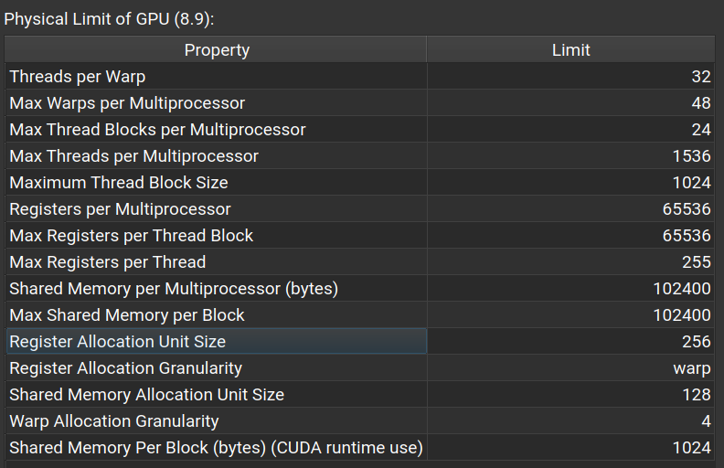
下面是重要的一些最大限制值：
- Max Threads per Multiprocessor (单SM最大线程数) = 1536 。
- Max Warps per Multiprocessor (单SM最大Warp数) = 48 （1536 \div 32 = 48）。
- Max Thread Blocks per Multiprocessor (单SM最大Block数) = 24。
- Registers per Multiprocessor (单SM总寄存器数) = 65536。
- Register Allocation Unit Size (寄存器分配单位) = 256。
- Register Allocation Granularity (寄存器分配颗粒度) = warp。
- Warp Allocation Granularity (Warp分配颗粒度) = 4。
10.1.1 寄存器分配颗粒度是Warp和寄存器分配单位¶
寄存器分配颗粒度是warp说明寄存器的分配是以warp为单位的。(好像没说啥？看下面。) Nvidia的GPU通常是这样，但是也有一些其它GPU(比如AMD的)不一定是以warp为单位。
在分配粒度是warp的约束下，Register Allocation Unit Size = 256（寄存器分配单位为 256）指的是：硬件在为 Warp 或线程块（Thread Block）分配物理寄存器时，分配的量必须是 256 个寄存器的整数倍（即以 256 为单位进行向上取整/量化分配）。
10.1.1.1 它是如何工作的？（向上取整规则）¶
GPU 里的寄存器不是“你要几个就给你几个”的。假设你的内核（Kernel）经过编译器（ptxas）编译后，每个线程实际使用的寄存器数量是固定的（比如 regs_per_thread）。
对于一个包含 32 个线程的 Warp 来说，它总共需要的原始寄存器数量为：
硬件在分配时，不会直接把这个原始值给它，而是会套用这个公式进行 向上取整（Ceiling to 256）：
举个具体例子：
- 场景 A：如果每个线程使用 31 个寄存器：
- 一个 Warp 需要 32 \times 31 = 992 个寄存器。
- 256 的倍数中，刚好大于等于 992 的是 1024（4 \times 256）。
- 因此，硬件会给这个 Warp 实际划拨 1024 个寄存器。这意味着有 32 个寄存器被浪费了（没有被利用）。
- 场景 B：每个线程的寄存器 32 个：
- 一个 Warp 需要 32 \times 32 = 1024 个寄存器。
- 刚好等于 1024，完美契合 4 个分配单位，毫无浪费。
- 场景 C：如果你不小心多加了一个局部变量，导致每个线程从 32 涨到了 33 个寄存器：
- 一个 Warp 需要 32 \times 33 = 1056 个寄存器。
- 超过了 1024，必须向上取整到下一个档位：1280 个寄存器（5 \times 256）。
10.1.1.2 为什么会有这个限制？¶
- 硬件设计与寻址简化： 在 SM 庞大的物理寄存器堆（Register File）中，如果允许任意零散的、非对齐的寄存器划分，硬件的分配逻辑（Allocator）和寻址电路会变得极其复杂。通过设定固定的分配粒度（如 256 个寄存器一档），可以大幅简化硬件调度器的设计，提高硬件分配的吞吐和响应速度。
- 配合 Warp 粒度管理： 一个 Warp 包含 32 个线程。以 256 为单位（刚好是 32 的 8 倍），意味着每个线程平均可以分到 8 个寄存器的倍数，非常符合硬件的二进制组织结构。
10.1.1.3 对性能调优（Occupancy）的致命影响¶
这个“256 边界”在编写高性能 CUDA 算子时极其重要，直接关系到 GPU 占用率（Occupancy）：
- “悬崖效应”（Cliff Effect）： 在调优 Kernel 时，你可能会发现，有时候你仅仅优化掉了一两个局部变量（比如寄存器从 33 降到了 32），或者不小心多加了一个变量（从 32 涨到 33），程序的性能并没有发生线性变化，而是 突然暴跌或暴涨。
- 原因就在于此：跨越了 256 的倍数边界。
- 一旦跨过边界，单个 Warp 占用的物理寄存器大增，导致 SM 中能同时容纳的活跃 Warp 总数（Active Warps）被迫减少。
- 当活跃 Warp 数量低于某个临界点时，硬件的延迟隐藏（Latency Hiding）能力失效（前面讨论过的“32倍过量分配”被打破），算术单元（ALU）开始因为等数据而干瞪眼，导致整体吞吐量显著下降。
10.2 不同网格配置对于占用率的影响¶
在向量加法的例子里，要启动512个线程，我们可以有很多方式。
- 启动512个线程块，每个线程块只有一个线程 通过这一章的学习，我们知道这种方式很不好，因为即使一个线程块只有一个线程，它也至少要占用一个warp(32个线程)，浪费了96%(31/32)的资源。
- 启动一个线程块，每个线程块512个线程 看起来不错，但是如果需要处理的数据很多，我们必须增加线程块
- 启动多个线程块，每个线程块多个线程 这个组合起来就很多了，比如(2, 256), (4, 128), (8, 64), ..., (265, 2)。根据前面的分析，每个线程块至少32个线程才不会浪费，我们还可以留下 (2, 256), (4, 128), (8, 64), (16, 32)这么多组合。那么哪种(哪些)组合的启动方式是比较好的呢？这是一个非常重要的问题，这个问题没有简单的答案，因为它涉及 硬件资源利用率（Occupancy）、Warp 调度效率、寄存器与共享内存的分配限制，以及现代 GPU 的并行架构特性。
本节我们重点关注不同启动网格配置对于占用率的影响，不同的占用率也会影响到最终的计算效率。注意：占用率只是影响计算效率的一个因素，某种方式的占用率稍低一点，并不代表它的最终效率一定就低。
我们下面来测试一下不同的程序配置下的占用率。
10.2.1 配置一¶
每个块的线程数是64，每个线程使用32个寄存器，每个块使用2048字节的共享内存。可以看到占用率100%。
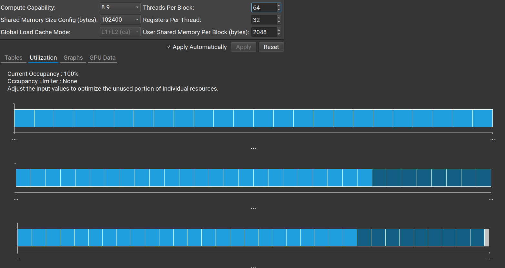
10.2.2 配置二¶
每个块的线程数是32，每个线程使用32个寄存器，每个块使用2048字节的共享内存。可以看到占用率50%。
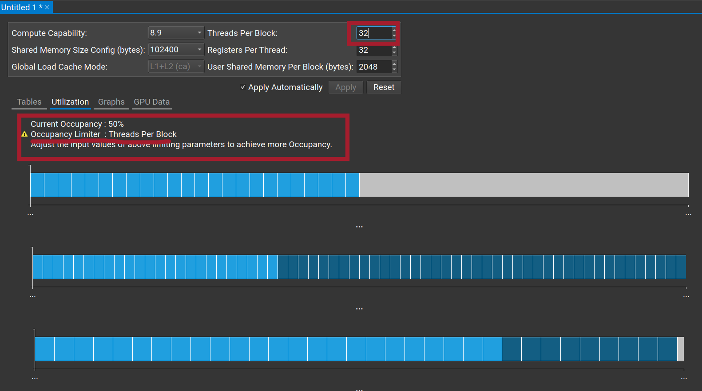
原因就是前面分析的，每个块32线程，但是我用的RTX 4090 Mobile的一个SM最多支持24个块，那么最多32 * 24 = 768个线程，而SM最多可以支持1536个线程，所以只利用了50%。
10.3.3 配置三¶
每个块的线程数是64，每个线程使用48个寄存器，每个块使用2048字节的共享内存。可以看到占用率83%。
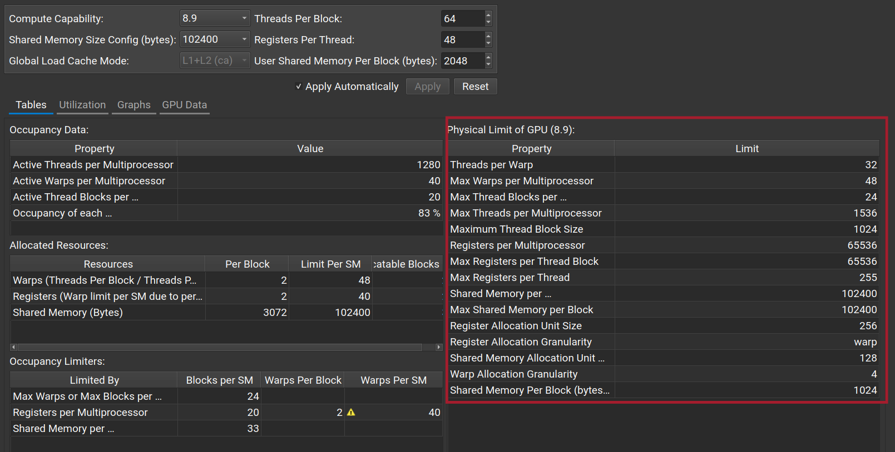
- 一个 Warp 消耗多少寄存器：32 \text{ 线程} \times 48 \text{ 寄存器} = 1536 个。
- 对齐单元检查：右表写着
Register Allocation Unit Size: 256。1536 刚好能被 256 整除（1536 \div 256 = 6 个分配单元），因此完美对齐，每个 Warp 的实际消耗就是 1536 个寄存器。 - 一个 Block 消耗多少寄存器：一个Block 有 64 个线程，即包含 2 个 Warp。
现在，让 总共的寄存器数量 65536 去除以它：
但是看图计数器的结果最多支持的 Block 是 20。为什么不是21呢？
前面我们还有一个约束条件没有讲到：Warp Allocation Granularity (Warp分配颗粒度) = 4 如果是21个 Block， 每个Block 2 个 Warp，那么总共 42 个 Warp。根据Warp分配颗粒度是4，那么就需要 44 个 Warp。一个 Warp 需要 1536 个寄存器，所以总共需要 44\times1536=67584个寄存器。这显然超出了65536个寄存器的限制。因此，最多分配20个Block。
现在我们来算左上角的 Occupancy Data 最终结果：
- Active Thread Blocks per Multiprocessor (活跃Block数) = 20 个。
- Active Warps per Multiprocessor (活跃Warp数)： 每个 Block 有 2 个 Warp，一共 20 个 Block：
- Active Threads per Multiprocessor (活跃总线程数)：
- Occupancy（占用率）的公式：
我们把刚才算出来的 40，和右表里物理极限的天花板 48（Max Warps per Multiprocessor）代入：
11. 查询设备属性——使用代码来获取资源的上限¶
11.1 简介¶
当CUDA应用程序在系统上执行时，如何查找设备中的SM数量以及每个SM可以分配的块和线程数量？相同的问题也适用于其他类型的资源，其中一些我们到目前为止尚未讨论。一般而言，许多现代应用程序被设计为在各种硬件系统上执行。通常需要应用程序查询底层硬件的可用资源和能力，以利用更有能力的系统，同时补偿性能较差的系统。
每个CUDA设备SM中的资源量是设备的计算能力的一部分。一般而言，计算能力水平越高，每个SM中的资源就越多。 GPU的计算能力往往会从一代到下一代逐渐增加。 Ampere A100 GPU的计算能力为8.0。
在CUDA C中，有一种内置机制，使主机代码能够查询系统中可用设备的属性。CUDA运行时系统（设备驱动程序）具有一个名为cudaGetDeviceCount的API函数，该函数返回系统中可用的CUDA设备数量。主机代码可以通过使用以下语句找出可用的CUDA设备数量：
int devCount;
cudaGetDeviceCount(&devCount);
现代PC系统通常具有两个或更多的CUDA设备。这是因为许多PC系统配备了一个或多个“集成”GPU。这些GPU是默认的图形单元，并提供基本的功能和硬件资源，以执行现代窗口化用户界面的最低图形功能。大多数CUDA应用程序在这些集成设备上的性能不会很好。这将是主机代码迭代遍历所有可用设备，查询其资源和能力，并选择那些具有足够资源以满足应用程序性能的设备的原因。
CUDA运行时将系统中所有可用的设备编号从0到devCount-1。它提供了一个名为cudaGetDeviceProperties的API函数，该函数返回给定数字的设备的属性。例如，我们可以在主机代码中使用以下语句迭代可用设备并查询其属性：
cudaDeviceProp devProp;
for(unsigned int i = 0; i < devCount; i++) {
cudaGetDeviceProperties(&devProp, i);
// Decide if device has sufficient resources/capabilities
}
内置类型cudaDeviceProp是一个C结构类型，其字段表示CUDA设备的属性。读者可以参考CUDA C编程指南，了解该类型的所有字段。我们将讨论一些特别与分配执行资源给线程相关的字段。我们假设属性在由cudaGetDeviceProperties函数设置的devProp变量中返回。如果读者选择使用不同的变量名，显然需要在以下讨论中替换相应的变量名。
如其名称所示，字段devProp.maxThreadsPerBlock给出了在查询的设备中允许的块中线程的最大数量。某些设备允许每个块中有多达1024个线程，而其他设备可能允许更少。未来的设备甚至可能允许每个块超过1024个线程。因此，查询可用设备并确定哪些设备将允许应用程序所需的足够数量的块中的线程是一个好主意。
设备中的SM数量在devProp.multiProcessorCount中给出。如果应用程序需要许多SM才能达到满意的性能，它绝对应该检查潜在设备的此属性。此外，设备的时钟频率在devProp.clockRate中。时钟速率和SM数量的组合给出了设备的最大硬件执行吞吐量的良好指示。
主机代码可以在字段devProp.maxThreadsDim[0]（x维度），devProp.maxThreadsDim[1]（y维度）和devProp.maxThreadsDim[2]（z维度）中找到每个块的每个维度上允许的最大线程数。使用此信息的一个示例是对于自动调整系统，在评估底层硬件的最佳性能块尺寸时设置块维度的范围。类似地，它可以在devProp.maxGridSize[0]（x维度），devProp.maxGridSize[1]（y维度）和devProp.maxGridSize[2]（z维度）中找到网格的每个维度上允许的最大块数。此信息的典型用途是确定网格是否可以具有足够的线程来处理整个数据集，或者是否需要某种迭代方法。
字段devProp.regsPerBlock给出了每个SM中可用的寄存器数量。此字段对于确定内核是否可以在特定设备上实现最大占用或是否将受到其寄存器使用的限制非常有用。请注意，字段的名称有点误导人。对于大多数计算能力级别，块可以使用的寄存器的最大数量确实与SM上可用的总寄存器数量相同。但是，对于某些计算能力级别，块可以使用的寄存器的最大数量小于SM上可用的总寄存器数量。
我们还讨论了warp的大小取决于硬件。 warp的大小可以从devProp.warpSize字段中获得。
11.2 使用deviceQuery¶
安装CUDA的时候，在它的extras/demo_suite下有一个queryDevice程序，我们可以用它来查看GPU的参数。如果没有，可以自行安装：
# 1. 克隆官方统一的 samples 仓库
git clone https://github.com/NVIDIA/cuda-samples.git
cd cuda-samples
# 2. 切换到12.6
git checkout v12.6
# 3. 源码就在这里
cd Samples/1_Utilities/deviceQuery/
# 4. 现场编译
make
# 5. 运行你改动后的版本
./deviceQuery
/usr/local/cuda-12.6/extras/demo_suite/deviceQuery
/usr/local/cuda-12.6/extras/demo_suite/deviceQuery Starting...
CUDA Device Query (Runtime API) version (CUDART static linking)
Detected 1 CUDA Capable device(s)
Device 0: "NVIDIA GeForce RTX 4090 Laptop GPU"
CUDA Driver Version / Runtime Version 13.1 / 12.6
CUDA Capability Major/Minor version number: 8.9
Total amount of global memory: 16376 MBytes (17170956288 bytes)
MapSMtoCores for SM 8.9 is undefined. Default to use 128 Cores/SM
MapSMtoCores for SM 8.9 is undefined. Default to use 128 Cores/SM
(76) Multiprocessors, (128) CUDA Cores/MP: 9728 CUDA Cores
GPU Max Clock rate: 1815 MHz (1.81 GHz)
Memory Clock rate: 9001 Mhz
Memory Bus Width: 256-bit
L2 Cache Size: 67108864 bytes
Maximum Texture Dimension Size (x,y,z) 1D=(131072), 2D=(131072, 65536), 3D=(16384, 16384, 16384)
Maximum Layered 1D Texture Size, (num) layers 1D=(32768), 2048 layers
Maximum Layered 2D Texture Size, (num) layers 2D=(32768, 32768), 2048 layers
Total amount of constant memory: 65536 bytes
Total amount of shared memory per block: 49152 bytes
Total number of registers available per block: 65536
Warp size: 32
Maximum number of threads per multiprocessor: 1536
Maximum number of threads per block: 1024
Max dimension size of a thread block (x,y,z): (1024, 1024, 64)
Max dimension size of a grid size (x,y,z): (2147483647, 65535, 65535)
Maximum memory pitch: 2147483647 bytes
Texture alignment: 512 bytes
Concurrent copy and kernel execution: Yes with 5 copy engine(s)
Run time limit on kernels: Yes
Integrated GPU sharing Host Memory: No
Support host page-locked memory mapping: Yes
Alignment requirement for Surfaces: Yes
Device has ECC support: Disabled
Device supports Unified Addressing (UVA): Yes
Device supports Compute Preemption: Yes
Supports Cooperative Kernel Launch: Yes
Supports MultiDevice Co-op Kernel Launch: No
Device PCI Domain ID / Bus ID / location ID: 0 / 1 / 0
Compute Mode:
< Default (multiple host threads can use ::cudaSetDevice() with device simultaneously) >
deviceQuery, CUDA Driver = CUDART, CUDA Driver Version = 13.1, CUDA Runtime Version = 12.6, NumDevs = 1, Device0 = NVIDIA GeForce RTX 4090 Laptop GPU
Result = PASS
11.3 编程实现设备查询¶
关于通过编程查询设备，可以参考cuda-samples里的deviceQuery。
这里实现最常用的一些查询。完整的代码在：device-query/main.cu。
11.3.1 print_device_info函数¶
void print_device_info() {
int deviceCount = 0;
// 1. 获取系统中的 CUDA 设备数量
cudaError_t error_id = cudaGetDeviceCount(&deviceCount);
if (error_id != cudaSuccess) {
std::cerr << "cudaGetDeviceCount failed: " << cudaGetErrorString(error_id) << std::endl;
return;
}
if (deviceCount == 0) {
std::cout << "No CUDA devices found on the system." << std::endl;
return;
}
std::cout << "Found " << deviceCount << " CUDA devices." << std::endl;
std::cout << "------------------------------------------------" << std::endl;
// 默认情况下，CUDA 程序使用设备 0
int currentDevice = 0;
// 2. 声明 cudaDeviceProp 结构体
cudaDeviceProp devProp;
// 3. 调用 cudaGetDeviceProperties 获取设备属性
error_id = cudaGetDeviceProperties(&devProp, currentDevice);
if (error_id != cudaSuccess) {
std::cerr << "cudaGetDeviceProperties for device " << currentDevice
<< " failed: " << cudaGetErrorString(error_id) << std::endl;
return;
}
// 4. 打印关键属性
std::cout << "Device ID: " << currentDevice << std::endl;
std::cout << " Name: " << devProp.name << std::endl;
// 计算能力 (Compute Capability) 是 CUDA 架构版本
std::cout << " Compute Capability: "
<< devProp.major << "." << devProp.minor << std::endl;
// 全局内存大小 (转换为 GB)
std::cout << " Total Global Memory: "
<< (devProp.totalGlobalMem / (1024.0 * 1024.0 * 1024.0))
<< " GB" << std::endl;
std::cout << " Total Constant Memory: " << devProp.totalConstMem / 1024.0 << " KB" << std::endl;
// SM 数量 (Streaming Multiprocessors)
std::cout << " Multiprocessors (SMs): " << devProp.multiProcessorCount << std::endl;
// Max threads per SM
std::cout << " Max Threads Per SM: " << devProp.maxThreadsPerMultiProcessor << std::endl;
// Max threads per block
std::cout << " Max Threads Per Block: " << devProp.maxThreadsPerBlock << std::endl;
std::cout << " ClockRate: " << devProp.clockRate << std::endl;
std::cout << " Registers Per SM: " << devProp.regsPerBlock << std::endl;
std::cout << " Warp Size: " << devProp.warpSize << std::endl;
std::cout << " Shared Memory Per Block: " << devProp.sharedMemPerBlock << std::endl;
// Max grid size (for launching kernels)
std::cout << " Max Grid Size (x, y, z): ("
<< devProp.maxGridSize[0] << ", "
<< devProp.maxGridSize[1] << ", "
<< devProp.maxGridSize[2] << ")" << std::endl;
}
11.3.2 get_max_blocks_per_sm函数¶
void get_max_blocks_per_sm(int threadsPerBlock) {
int maxBlocks;
// 假设我们使用设备 0
int deviceId = 0;
cudaSetDevice(deviceId);
// 3. 定义共享内存的使用量 (本例中为 0)
size_t dynamicSharedMemorySize = 0;
// 4. 调用 cudaOccupancyMaxActiveBlocksPerMultiprocessor
cudaError_t error = cudaOccupancyMaxActiveBlocksPerMultiprocessor(
&maxBlocks, // [输出] 最大 Block 数量
simpleKernel, // Kernel 函数指针
threadsPerBlock, // 每个 Block 的线程数 (threads per block)
dynamicSharedMemorySize// 动态共享内存使用量 (bytes)
);
if (error != cudaSuccess) {
std::cerr << "Error determining max blocks per SM: "
<< cudaGetErrorString(error) << std::endl;
return;
}
// 5. 打印结果
std::cout << "--- Device Occupancy Query ---" << std::endl;
std::cout << "Device ID: " << deviceId << std::endl;
std::cout << "Threads Per Block Used: " << threadsPerBlock << std::endl;
std::cout << "Max Active Blocks Per SM: " << maxBlocks << std::endl;
std::cout << "------------------------------" << std::endl;
}
这个函数的核心作用是：在算子实际运行之前，通过空跑编译期的元数据，直接向硬件驱动“算命”，探知在当前的 Block 线程配置下，单个 SM 极限能塞下多少个 Block。
它调用了经典的官方占用率 API：cudaOccupancyMaxActiveBlocksPerMultiprocessor。
11.3.2.1. 运行时初始化与环境绑定¶
int deviceId = 0;
cudaSetDevice(deviceId);
size_t dynamicSharedMemorySize = 0;
- 作用：指定要探测的 GPU 物理卡（设备 0），并声明该算子在运行时不需要开辟动态共享内存（
dynamicSharedMemorySize = 0）。
11.3.2.2. 调用cudaOccupancyMaxActiveBlocksPerMultiprocessor¶
cudaError_t error = cudaOccupancyMaxActiveBlocksPerMultiprocessor(
&maxBlocks, // [输出] 计算出的单个 SM 最大常驻 Block 极限值
simpleKernel, // [输入] 你的核心 Kernel 函数指针（算子本身）
threadsPerBlock, // [输入] 你计划为每个 Block 分配的线程数
dynamicSharedMemorySize // [输入] 动态 Shared Memory 字节数
);
- 核心机制：这个 API 根本不需要真正把 Kernel 丢进 GPU 去跑。当编译器把你的
simpleKernel编译完后，它的机器码里就已经硬编码记下了两个关键属性：- 这个算子每个线程需要消耗多少个 寄存器（Registers Per Thread）。
- 这个算子编译期要吃掉多少静态共享内存。
- 驱动程序（Driver）拿到
simpleKernel的寄存器用量、你传入的threadsPerBlock以及Shared Memory后，会在内部直接做我们之前用占用率计算器做类似的事情（去看 65536的寄存器上限、1536/2048 线程槽天花板、以及 Shared Memory 上限）。最后把木桶效应里最短的那根板算出的 Block 数量，塞进maxBlocks变量里传出来。
11.3.2.3. 结果防御与输出¶
if (error != cudaSuccess) { ... }
std::cout << "Max Active Blocks Per SM: " << maxBlocks << std::endl;
- 作用：确保 API 没有因为传入非法的 Kernel 指针而崩溃，并打印出算出来的物理上限。
11.3.2.4. 为什么要传入参数 threadsPerBlock？¶
在调用这个 API 时，寄存器用量（通过 simpleKernel 隐式读出）和共享内存大小是固定的，只有 threadsPerBlock 是你可以自由调节的控制变量。
之所以必须传入它，是因为它直接决定了两个导致占用率崩盘的硬件物理红线：
1. 决定了单个 Block 的“资源吞吐乘数”¶
驱动必须要知道你的 threadsPerBlock 是多少，才能算出一个 Block 要卷走多少总寄存器。
- 如果你传
threadsPerBlock = 64，单 Block 吃 3,072 个寄存器，SM 大盘（65,536）除下来能放 21 个 Block。 - 如果你改传
threadsPerBlock = 512，单 Block 疯狂吃掉 24,576 个寄存器，SM 大盘除下来，瞬间只能放 65,536 \div 24,576 = \mathbf{2} 个 Block！
2. 直接去撞 SM 的“物理线程槽（Thread Slots）”天花板¶
我们在前面的硬件大盘表里查到，Ada 架构（4080/4090）单 SM 最多只能常驻 1536 个线程。
- 如果你不给驱动传入
threadsPerBlock，驱动就无法做以下约束检查：
- 当你传 64 时，线程槽限制下的 Block 数是 1536 \div 64 = 24 个（刚好对应硬件的 Max Blocks 限制）。
- 当你传 1024 时，即使你的寄存器用得再少，线程槽限制下的 Block 数直接掉到 1536 \div 1024 = \mathbf{1} 个！
11.3.2.5 🎯 工业界应用（动态网格大小 Dynamic Grid Size）¶
在编写高性能 AI 推理引擎（如 TensorRT、或者是手写 Triton 算子自动化外壳）时，工程师绝不会把 Grid Size（网格大小，即启用的 Block 总数）在代码里写死。
他们通常会利用这个函数写一个 自动化寻优循环：
int bestThreads = 128;
int bestOccupancy = 0;
// 遍历不同的 Block 大小配置，现场算卦
for (int tpb = 128; tpb <= 1024; tpb += 128) {
int maxBlocks;
cudaOccupancyMaxActiveBlocksPerMultiprocessor(&maxBlocks, simpleKernel, tpb, 0);
int currentOccupancy = maxBlocks * tpb; // 算出总活跃线程数
if (currentOccupancy > bestOccupancy) {
bestOccupancy = currentOccupancy;
bestThreads = tpb; // 抓出能榨干显卡最高占用率的那个完美平衡点
}
}
// 最终用最优的配置去拉起算子
simpleKernel<<<gridSize, bestThreads>>>(...);
11.3.3 执行结果¶
lili@itcast:~/codes/device-query/build$ ./device_query
Found 1 CUDA devices.
------------------------------------------------
Device ID: 0
Name: NVIDIA GeForce RTX 4090 Laptop GPU
Compute Capability: 8.9
Total Global Memory: 15.9917 GB
Total Constant Memory: 64 KB
Multiprocessors (SMs): 76
Max Threads Per SM: 1536
Max Threads Per Block: 1024
ClockRate: 1815000
Registers Per SM: 65536
Warp Size: 32
Shared Memory Per Block: 49152
Opt-in Shared Memory per Block: 101376
Shared Memory per SM: 102400
Max Grid Size (x, y, z): (2147483647, 65535, 65535)
Max Block Dimensions (x, y, z): (1024, 1024, 64)
####Query Max Blocks Per SM####
--- Device Occupancy Query ---
Device ID: 0
Threads Per Block Used: 64
Max Active Blocks Per SM: 24
------------------------------
结果里关于Shared Memory，有三个值：
- Shared Memory Per Block： 48KB
- Opt-in Shared Memory per Block: 99KB
- Shared Memory per SM: 100KB
这是什么意思呢？
11.4 RTX 4090 Laptop GPU 的 L1 / Shared Memory 容量¶
根据 NVIDIA 官方文档：
| 硬件参数 | 容量 | 说明 |
|---|---|---|
| Unified Data Cache | 128 KB/SM | L1 Cache、Texture Cache、Shared Memory 共用的片上存储资源 |
| Maximum Shared Memory per SM | 100 KB/SM | 每个 SM 最多配置给 Shared Memory 的容量 |
| Maximum Shared Memory per Block | 99 KB | 单个 Block 最大可使用容量 |
| Shared Memory 配置选项 | 0、8、16、32、64、100 KB | 每个 SM 的 Shared Memory carveout 配置 |
来源：NVIDIA 官方文档。NVIDIA Docs
11.4.1. 为什么 Shared Memory 最大是 100 KB，而 L1 是 128 KB？¶
Ada 架构采用统一的 L1/Texture/Shared Memory 设计。
可以将它理解为：
其中一部分可以配置给 Shared Memory，剩余部分供 L1/Texture Cache 使用。
例如：
| Shared Memory 配置 | 剩余 Unified Data Cache 容量 |
|---|---|
| 0 KB | 128 KB |
| 8 KB | 120 KB |
| 16 KB | 112 KB |
| 32 KB | 96 KB |
| 64 KB | 64 KB |
| 100 KB | 28 KB |
注意：表中的剩余容量是配置容量上的差值，不应直接等同于实际运行时 L1 Cache 的有效容量。
NVIDIA 官方明确指出，Ada 架构的 Combined L1 Cache Capacity 是 128 KB，Shared Memory 可以通过 carveout 在 0、8、16、32、64、100 KB 之间配置。NVIDIA Docs
11.4.2. 为什么单个 Block 最大只能使用 99 KB？¶
这里有一个容易忽略的细节：NVIDIA 在 Ada 架构中规定，每个 Thread Block 需要预留 1 KB Shared Memory。因此：
这就是为什么：
- SM 最大 Shared Memory：100 KB。
- 单个 Block 最大 Shared Memory：99 KB。
另外，单个 Block 使用超过 48 KB 的 Shared Memory 时，需要使用动态 Shared Memory，并显式 opt-in。NVIDIA Docs
11.4.3. Occupancy Calculator¶
因为单个SM的共享内存是可以动态调整的，所以在计数器里，我们会看到有一个Share Memory Size Config。我们之前把它设置为最大的100KB，如果调小这个值，计数器的结果也会发生变化。
11.5 常见GPU参数¶
11.5.1 历代主流 GPU 硬件参数（单 SM 维度）¶
| 硬件核心指标（单 SM 维度） | Blackwell (B200/B100) |
Hopper (H100/H200) |
Ada Lovelace (RTX 4090/4080) |
Ampere (DC) (A100) |
Turing (T4) |
Volta (V100) |
|---|---|---|---|---|---|---|
| Compute Capability | 10.0 |
9.0 |
8.9 |
8.0 |
7.5 |
7.0 |
| Processing Blocks / SM | 4 个 | 4 个 | 4 个 | 4 个 | 4 个 | 4 个 |
| FP32 Cores / SM | 128 个 | 128 个 | 128 个 | 64 个 | 64 个 | 64 个 |
| INT32 Cores / SM | 128 个 (时分复用) | 64 个 | 64 个 | 64 个 | 64 个 | 64 个 |
| Tensor Cores / SM | 4 个 (第5代) | 4 个 (第4代) | 4 个 (第4代) | 4 个 (第3代) | 8 个 (第2代) | 8 个 (第1代) |
| Tensor Core 精度支持 | FP4, FP8, FP16, BF16, INT8 | FP8, FP16, BF16, TF32, INT8 | FP8, FP16, BF16, TF32, INT8 | FP16, BF16, TF32, INT8 | FP16, INT8, INT4 | FP16 |
11.5.1 A100的性能¶
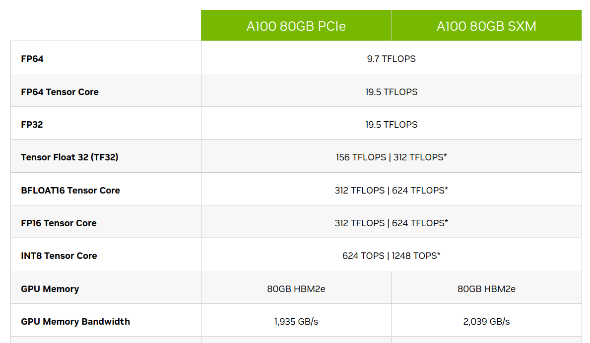
11.5.2 RTX 4090的性能¶
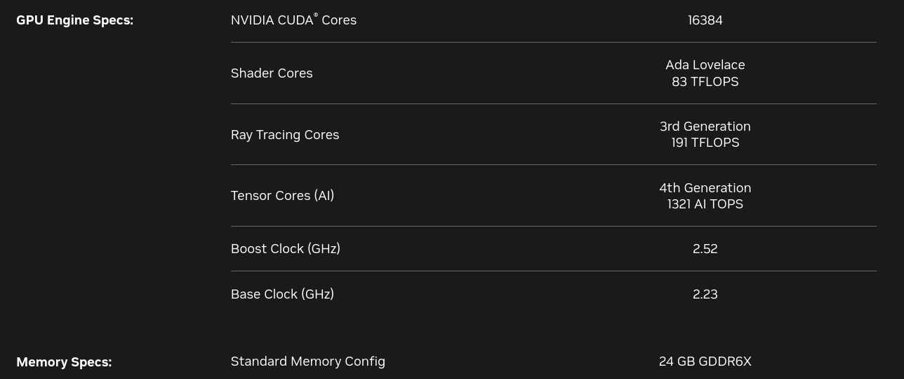
11.5.3 A00 vs RTX 4090 —— 基本参数¶
我们可以发现，在Nvidia的官网，A100和RTX 4090展示的参数完全不同。对于数据中心卡，目标客户是企业、云计算大厂和科研机构。这些人买卡只看单位成本下的算力密度、每瓦 TFLOPS、FP64/FP16 吞吐。因此，NVIDIA 必须像列服务器财报一样，把每种精度（TF32、FP16 Tensor Core、INT8）的 TFLOPS 贴在最显眼的地方。对于消费级显卡，向的是玩家、设计师、独立开发者。目标受众更关心游戏帧数（FPS）、光追性能（RT Cores）、AI 插帧（DLSS 3）以及 VRAM 容量等。
如果我们要查看更具体的信息，可以查看NVIDIA Ada GPU Architecture Whitepaper和NVIDIA A100 Tensor Core GPU Architecture。
下面是一些对比：
| 计算精度 / 核心类型 | RTX 4090 官方规格 (Boost 频率) | 你的 A100 数据对比 | 算力定性 |
|---|---|---|---|
| FP32 (传统 CUDA Core) | 82.6 TFLOPS | 19.5 TFLOPS | 标量/向量计算、激活函数、偏置 |
| FP16 Tensor Core | 165.2 TFLOPS (稀疏化后 330.3 TFLOPS) |
312 / 624 TFLOPS | 大模型半精度矩阵乘法 MMA |
| BF16 Tensor Core | 165.2 TFLOPS (稀疏化后 330.3 TFLOPS) |
312 / 624 TFLOPS | 大模型主流半精度矩阵乘法 |
| FP8 Tensor Core | 330.3 TFLOPS (稀疏化后 660.6 TFLOPS) |
不支持 (A100 无 FP8 硬件) | 40系及后续大模型极限量化推理 |
| INT8 Tensor Core | 330.3 TOPS (稀疏化后 660.6 TOPS) |
624 / 1248 TOPS | 传统量化推理 |
| FP64 (双精度) | 1.3 TFLOPS (1:64 裁剪) | 9.7 / 19.5 TFLOPS | 科学计算（4090被严重阉割） |
11.5.4. 多维度对比¶
11.5.4.1 算力维度：单卡标量 vs 工业矩阵乘法¶
从单卡纯算力的绝对数字来看，断代更新的 RTX 4090 在非矩阵计算上展现出了毁灭性的“下犯上”优势，但在大模型核心的张量加速上，A100 依旧具备恐怖的工业稳定性。
1. 标量与非矩阵算力（FP32 CUDA Core）¶
- RTX 4090 (82.6 TFLOPS) vs A100 (19.5 TFLOPS)
- 物理差距：4090 是 A100 的 4.2 倍。4090 拥有高达 16,384 个 FP32 CUDA 核心，且运行在 2.5GHz 的恐怖高频上（A100 仅约 1.4GHz）。
- 工程影响：在执行非矩阵乘法的标量融合算子（如逐元素的 Bias 加法、
GeLU/Activation、Softmax、LayerNorm）时，4090 的执行速度和单核吞吐明显快于 A100。
2. 半精度矩阵算力（FP16/BF16 Tensor Core）¶
这是大模型训练与推理的核心发动机：
- A100 Tensor Core：提供 312 TFLOPS（稀疏化后达 624 TFLOPS）的密集矩阵乘加（MMA）吞吐，且 原生支持在 FP32 Accumulate（高精度累加）下跑满这个速度。
- RTX 4090 Tensor Core：
- 在 FP32 累加（大模型训练、防溢出必备）模式下，算力被限制在 165.2 TFLOPS（稀疏后 330.4 TFLOPS），仅为 A100 的一半。
- 只有在 FP16 累加（追求极致的推理）模式下，才能通过双倍硬件加法通道轰到 330.3 TFLOPS（稀疏后 660.6 TFLOPS），勉强追平 A100。
3. 高级精度特性¶
- RTX 4090：原生支持 FP8 硬件格式（第 4 代 Tensor Core）。这使得 4090 在运行极度量化的推理引擎（如 TensorRT-LLM, vLLM 的 FP8 模式）时，表现非常惊艳。
- A100：完全不支持 FP8（Ampere 架构无此硬件单元），但原生支持 TF32 和强悍的 FP64（9.7 TFLOPS），在传统的双精度科学计算（如流体力学、有限元分析）中，4090（1.3 TFLOPS）被阉割得连 A100 的车尾灯都看不到。
11.5.4.2 显存架构维度：带宽才是大模型的命门¶
大模型往往是 Memory-bound（显存带宽受限） 任务。在这个维度，A100 展现出了作为工业级显卡的绝对技术壁垒。
| 显存核心指标 | RTX 4090 | A100 (SXM4 80GB 经典版) | 架构技术差距 |
|---|---|---|---|
| 显存类型 (Type) | GDDR6X (消费级) | HBM2e (高带宽内存堆叠) | HBM2e 具备极低的延迟和极高的物理并宽 |
| 显存容量 (Capacity) | 24 GB | 80 GB | 3.3 倍 的容量落差（决定了能不能无切分塞下模型） |
| 位宽 (Bus Width) | 384-bit | 5120-bit | A100 通过超大规模引脚堆叠实现海量并行 |
| 有效显存带宽 (Bandwidth) | ~1.0 TB/s | ~2.0 TB/s | 2 倍 速度差距（直接决定了大模型推理的每秒 Token 吞吐） |
- 工程痛点：由于 4090 只有 24GB 显存，稍大一点的模型（如 70B）在单卡上连权重都放不下，必须做极其激进的量化（4-bit）或多卡切分。而 A100 的 80GB 配合 2.0 TB/s 的吞吐，使得巨型矩阵在移入/移出片上 SRAM（Shared Memory）时，等待延迟只有 4090 的一半。
11.5.4.3 通信与多卡拓扑：单兵作战 vs 军团集群¶
这是数据中心卡和消费级游戏卡之间 最不可逾越的天堑，也是 NVIDIA 商业刀法最狠的地方。
1. 显卡间直接通信（P2P Interconnect）¶
- RTX 4090：零。 40系显卡被官方 彻底拔掉了物理 NVLink 接口。
- 怎么多卡通信？ 4090 多卡之间只能走主板的 PCIe Gen4 x16 通道，单向最大带宽仅为 32 GB/s（双向 64 GB/s）。
- 并且，由于消费级主板的 CPU PCIe 通道数极为有限（通常仅 20~24 条），一旦你插上 2 张或 4 张 4090，通道会降速到 PCIe x8 甚至 x4，多卡通信速度会断崖式下跌到十几 GB/s，且面临高昂的 CPU 中断延迟。
- A100 (SXM4)：无敌。 拥有 12 条第三代 NVLink 通道。
- 怎么多卡通信？ 单卡提供高达 600 GB/s 的专有双向硬件通信带宽，是 4090 走 PCIe 通道的 近 10 倍！
2. 多卡集群拓扑与工程实现（Scale-Up 能力）¶
- A100 军团（HGX A100）：在 8 卡 A100 服务器中，通过片上的 NVSwitch 芯片，8 张卡之间构成了全通（All-to-All）的高速硬件网格。当你在跑大模型分布式训练（张量并行 Tensor Parallelism，如 Megatron-LM）或全量 FSDP 时，数十亿的参数、梯度在 GPU 之间高频同步。A100 的 600 GB/s 专有高速公路能让 GPU 永不停歇。
- 4090 临时凑的土炮队：如果你用 4 张 4090 强行跑张量并行，由于没有 NVLink，每算完一层矩阵，4张卡就要通过狭窄的 PCIe 独木桥互传数据。此时，4090 那强大的 82.6T 的 FP32 核心 将有 80% 的时间在处于空转、等待通信的状态，多卡并行效率（Scaling Efficiency）会发生灾难性暴跌。
11.5.5. 终极选型与调优指导¶
-
选择 RTX 4090 的黄金场景：
- 单卡轻量化开发/微调：跑 7B/13B 模型的 LoRA / QLoRA 训练。
- FP8 极限推理 serving：模型可以完全装进 24GB 显存内，利用其强大的单卡标量高频和 FP8 硬件特性，单卡吞吐极高。
- 算法工程摸底：手写算子、跑 Triton 验证逻辑，性价比无敌。
-
必须死守 A100 的钢铁防线：
- 超大模型分布式训练 / 强并行推理：只要模型大到必须跨卡切分（开启 Tensor Parallelism），没有任何悬念，必须选择带 SXM4 + NVLink 的 A100。
- 大规模长文本（Long Context）：长文本会产生极其巨大的 KV Cache 矩阵，这极为消耗显存带宽和容量。A100 的 80GB HBM2e 是保证线上延迟不崩盘的底线。
11.5.6 价格(仅供参考)¶
随着 50 系（Blackwell 消费级）的出炉，RTX 4090 的溢价出现了小幅松动，但受限于市场总存量和 AI 轻量化部署的刚需，价格依旧坚挺；而 A100 作为上一代“工业老将”，虽然受到 H100 和 Blackwell (B200) 大规模服役的挤压，但由于 80GB 显存大盘和 NVLink 护城河，二手和新卡市场依然维持着极高的溢价。
以下是两者的 真实市场报价（全新 vs 二手）与云端算力开销 的横向对比：
11.5.6.1 实体显卡采购价格对比¶
| 显卡型号 | 2026 当前市场零售价 (全新) | 二手/流转市场价 (Pre-Owned) | 初始官方指导价 (MSRP) |
|---|---|---|---|
| RTX 4090 (24GB GDDR6X) |
$2,400 ~ $2,800 (部分顶级非公如华硕 ROG 仍要 $3,400+) |
$1,800 ~ $2,100 | $1,599 |
| A100 PCIe 版 (80GB HBM2e) |
$11,000 ~ $18,900 (主要取决于 OEM 渠道和 Bulk 批发) |
$4,000 ~ $7,000 | ~$10,000+ (首发) |
| A100 SXM4 版 (80GB 需底座) |
$9,100 ~ $12,000 | $5,000 ~ $9,000 | ~$15,000+ (首发) |
价格背后的市场真相：
- RTX 4090 的保值神话：即使处于 2026 年，4090 的全新价格（~$2,500）依然远高于它四年前发布的指导价（$1,599）。这是因为它是 独立开发者和小微团队做本地 FP8 推理、LoRA 微调性价比最高的最强标量怪兽。
- A100 的断崖与顽固：A100 在二级市场上出现了明显的分水岭。
- PCIe 版本 由于可以插在普通服务器主板上灵活部署，它的全新/全新开箱（Open Box）价格依旧被炒得很高（$12,000+）。
- SXM4 版本 虽然性能更强（拥有满血 600GB/s NVLink），但因为必须依赖昂贵的 8 卡 HGX 专有服务器底座，无法单卡散卖给普通小微企业，其二手拆机裸卡的价格目前反而下探到了 $5,000 左右。
11.5.6.2 云端算力租赁开销对比 (Cloud Rental Cost)¶
由于 A100 单卡极为昂贵，在实际工程中，绝大多数团队都是通过云服务商租用算力。在 2026 年，两者的租赁价格同样拉开了清晰的档次：
- RTX 4090 (24GB) 租赁均价：
- $0.40 ~ $0.80 / 小时 / 单卡
- 工程定位：极度廉价的分布式实验场。适合算法工程师临时开机调试 Triton 算子代码，或者个人开发者跑生图、小模型微调。
- A100 (80GB) 租赁均价：
- $1.30 ~ $1.80 / 小时 / 单卡 （大厂如 Azure 走 8 卡 VM 批发的时薪摊下来约为 $3.40/卡）。
- 工程定位：正式的生产环境与中型模型（如 Llama 3 8B/70B）Serving 阵地。
11.5.6.3 “工程性价比”总账本¶
如果你手头有一笔预算（例如 $10,000），在 2026 年的市场环境下，你将面临两种完全不同的架构组网路径：
-
土炮方案：采购 4 张 RTX 4090 (约 $10,000)
- 你得到了：24\text{GB} \times 4 = 96\text{GB} 的总显存大盘，以及恐怖的 82.6\text{T} \times 4 \approx \mathbf{330\text{T}} 的物理 FP32 标量处理峰值。
- 代价是：由于没有 NVLink，跨卡走 PCIe 通信极慢。这套配置只适合做单卡分流的多并发推理（比如起 4 个独立的推理服务进程），或者彼此不打架的独立 LoRA 训练（数据并行）。
-
正规军方案：采购 1 张二手 A100 80GB PCIe (约 $7,000) + 配套服务器
- 你得到了：无缝的 80GB 单卡连续物理显存，2.0 TB/s 的 HBM2e 吞吐。可以毫无阻碍地部署 70B 大模型，不牺牲精度，且支持未来的多卡 NVLink 桥接弹性扩展。
- 代价是：标量算力较低，单卡的吞吐上限被焊死。
总结：在 2026 年，两者的价差依然保持在 3 到 5 倍。要榨干每一分钱，核心依然是看你的模型能不能塞进 24GB 的独木桥（4090），还是必须走 80GB HBM2e 的工业高架桥（A100）。
12. 块大小怎设置？¶
块大小是一个很重要的“超参数”，它的设置会影响内核的效率。但是不存在一个绝对的最优值，它涉及占用率、寄存器、共享内存以及计算的依赖关系。关于占用率，可以参考附录的实验。后面的Triton部分，我们会利用它的Autotune功能来自动的“搜索”最优块大小。下面我们给出一些选择原则，可以作为实验的起点。
通常情况下，最推荐且最稳妥的“黄金默认值”是 256 或 128。
以下是不做实验时，选择 Block 大小的一般原则和考量维度：
12.1 核心选择原则¶
-
必须是 32 的倍数（铁律）
- GPU 的基本调度单位是线程束（Warp），大小为 32 个线程。如果你的 Block 大小不是 32 的倍数（比如设成 50），最后一个 Warp 无法被填满，就会造成硬件资源的浪费（产生所谓的“inactive threads”）。
-
首选 256 或 128 作为默认起点
- 256 是最常见的通用选择。它既能提供足够多的 Warp（256 / 32 = 8 个 Warp）供调度器灵活切换、隐藏延迟，又不会因为单个 Block 太大而榨干 SM 的寄存器和共享内存。
- 如果内核的代码比较复杂、每个线程要用很多寄存器，或者申请了较多的共享内存，128 是一个更安全、更不易发生资源溢出的备选项。
-
避免极端大小（太小或太大）
- 太小（如 32）：会导致需要启动极多的 Block 才能填满 GPU，增加调度开销，且容易触及 SM 的 Block 数量上限。
- 太大（如 512 或 1024）：虽然大 Block 看起来并行度高，但它会给每个 Block 分配大量的寄存器和共享内存。这会导致 每个 SM 能同时容纳的 Block 数量锐减（甚至一个 SM 只能塞一个 Block），极大降低硬件占用率，甚至直接报资源耗尽的错误（
cudaErrorLaunchOutOfResources）。
12.2 针对不同任务形态的具体推荐¶
除了通用的 128/256 外，还会根据数据的维度来设计：
- 一维线性数据处理（如 Vector Add、ReLU、1D Stencil）
- 推荐：256 或 512。
- 只要寄存器不爆炸，512 也是一维向量计算的常见选择。
- 二维矩阵/图像处理（如矩阵乘法 Tiling、图像卷积）
- 推荐：16 \times 16 = 256 或 32 \times 8 = 256。
- 这样做可以完美对应二维的空间局部性，方便线程协作将数据加载到共享内存（Shared Memory）中。
12.3 如果追求极致：使用官方的“占用率计算器”¶
如果你不想凭经验盲猜，又懒得每次都写脚本跑实验，NVIDIA 提供了一个标准 API 叫做 cudaOccupancyMaxPotentialBlockSize。
cudaOccupancyMaxPotentialBlockSize 是 CUDA 运行时提供的一个非常实用的内置 API。它的主要功能是：根据你的 Kernel（内核函数）对寄存器和共享内存（Shared Memory）的实际消耗，自动计算出能够让该 Kernel 在目标 GPU 上达到最大占用率（Occupancy）的最佳 Block 大小（Block Size）。
使用它可以避免手动硬编码 Block 大小（如盲目选择 256 或 512），使代码在不同架构的 GPU 上都能自动适配最优的线程配置。
12.3.1 函数原型与参数解析¶
其 C++ 接口定义如下：
cudaError_t cudaOccupancyMaxPotentialBlockSize(
int *minGridSize,
int *blockSize,
const void *func,
size_t dynamicSMemSize,
int blockSizeLimit
);
参数详解：
minGridSize(输出)：返回实现最大占用率所需的 最小网格大小（Grid Size）。通常用于确保有足够的块来填满整个 GPU 的所有 SM。blockSize(输出)：返回计算出的 最佳块大小（Block Size / 线程数）。func(输入)：你的 CUDA Kernel 函数指针（例如my_kernel）。dynamicSMemSize(输入)：每个 Block 动态申请的 共享内存字节数（如果内核中使用extern __shared__，这里传入动态分配的大小；如果没用，传0）。blockSizeLimit(输入)：用户指定的 块大小上限（例如传入0表示使用硬件允许的最大限制，如 1024；或者传入自定义的限制值）。
12.3.2 完整代码使用示例¶
下面以一个简单的向量加法 Kernel 为例，展示如何在主机端（Host）动态调用该函数来获取最佳 Block 和 Grid 大小，并启动 Kernel：
#include <cuda_runtime.h>
#include <iostream>
// 1. 定义一个简单的 CUDA Kernel
__global__ void vectorAdd(const float *A, const float *B, float *C, int numElements) {
int i = blockDim.x * blockIdx.x + threadIdx.x;
if (i < numElements) {
C[i] = A[i] + B[i];
}
}
int main() {
int numElements = 1 << 20; // 约 100 万个元素
size_t size = numElements * sizeof(float);
// 分配主机与设备内存... (略)
float *d_A, *d_B, *d_C;
cudaMalloc(&d_A, size);
cudaMalloc(&d_B, size);
cudaMalloc(&d_C, size);
// ==========================================
// 2. 使用 cudaOccupancyMaxPotentialBlockSize 自动计算
// ==========================================
int minGridSize = 0;
int blockSize = 0;
// 假设这里没有使用动态共享内存，传 0；block 大小限制传 0（默认最大 1024）
cudaError_t err = cudaOccupancyMaxPotentialBlockSize(
&minGridSize,
&blockSize,
(void*)vectorAdd,
0,
0
);
if (err != cudaSuccess) {
std::cerr << "Occupancy calculation failed: " << cudaGetErrorString(err) << std::endl;
return -1;
}
std::cout << "推荐的最佳 Block Size (TPB): " << blockSize << std::endl;
std::cout << "推荐的最小 Grid Size (BPG): " << minGridSize << std::endl;
// ==========================================
// 3. 根据实际数据量计算真实的 Grid Size
// ==========================================
// 注意：minGridSize 只是为了保证占满 SM 的最小块数，
// 实际处理多于硬件容量的数据时，应该用总数据量去计算 Grid 大小：
int gridSize = (numElements + blockSize - 1) / blockSize;
// 4. 启动 Kernel
vectorAdd<<<gridSize, blockSize>>>(d_A, d_B, d_C, numElements);
// 同步并清理
cudaDeviceSynchronize();
cudaFree(d_A);
cudaFree(d_B);
cudaFree(d_C);
return 0;
}